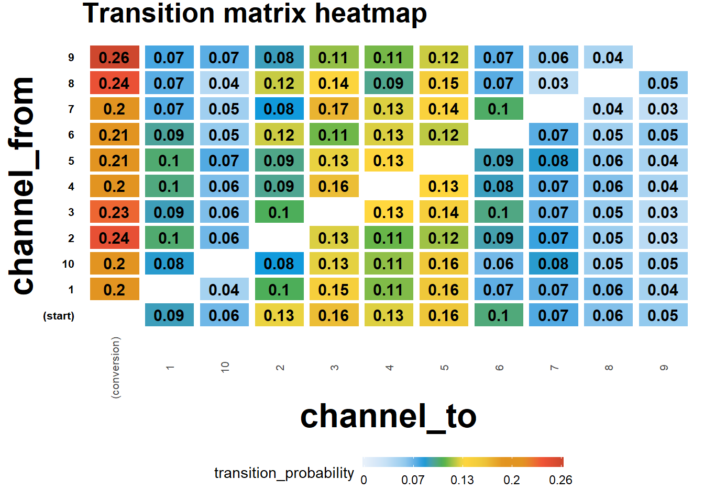
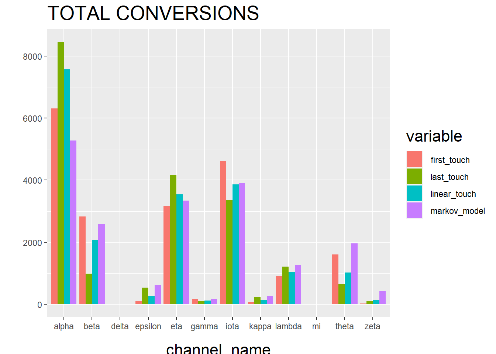
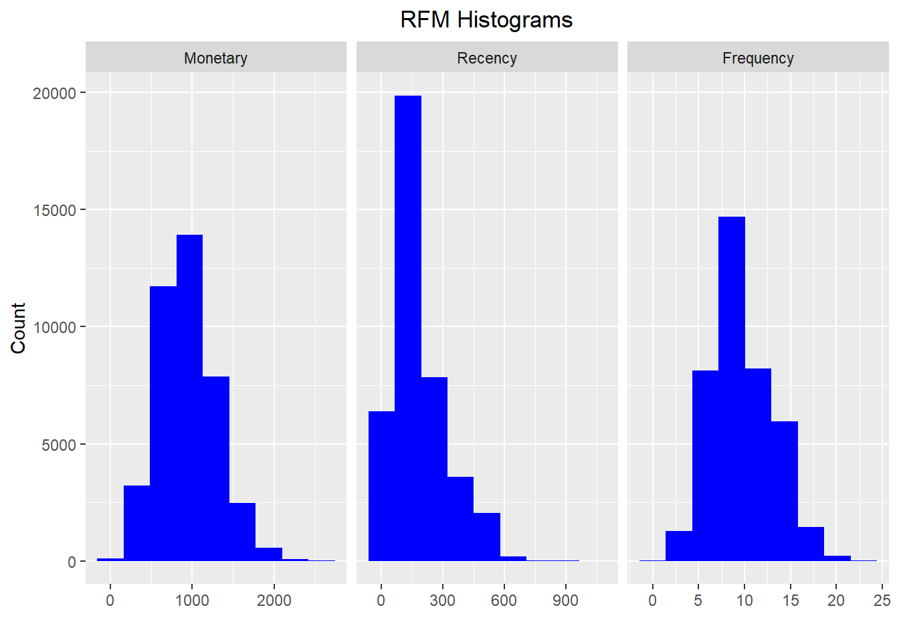
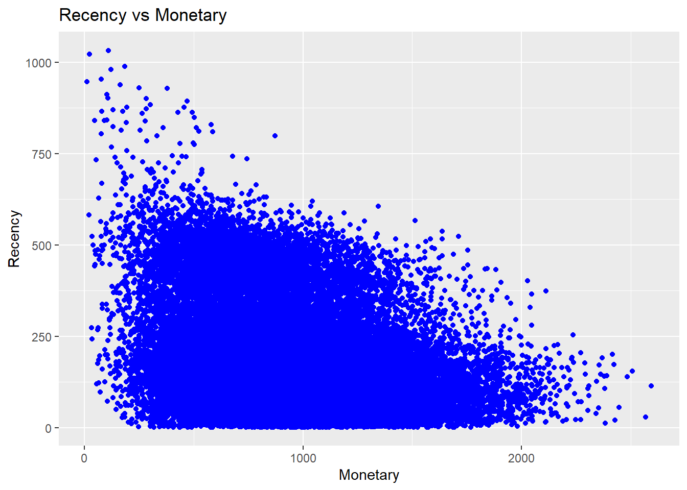
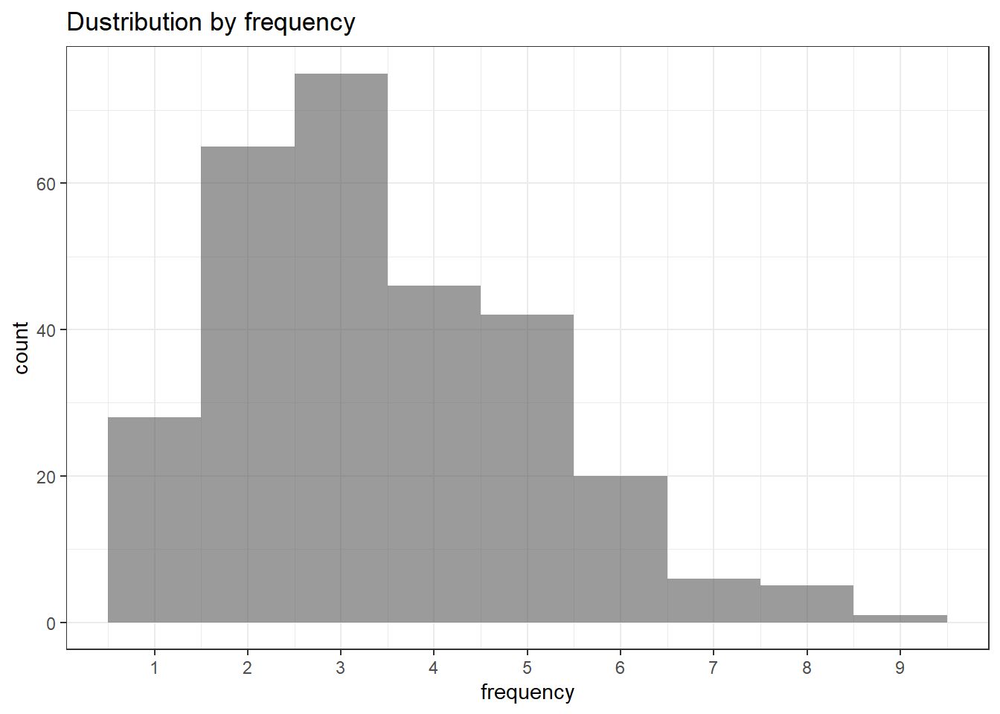
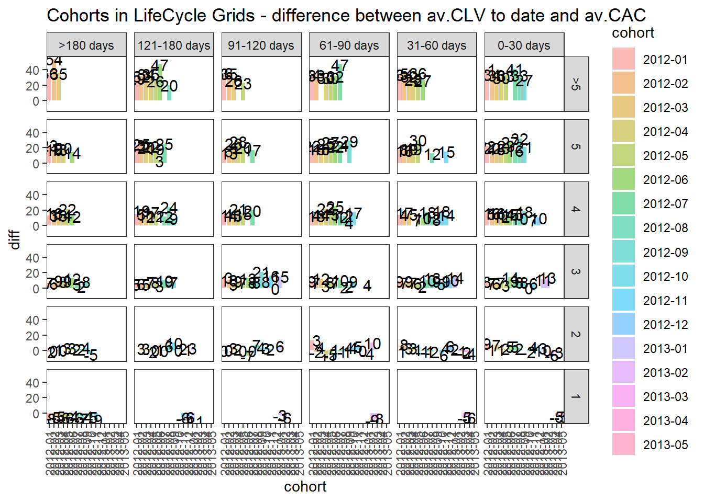
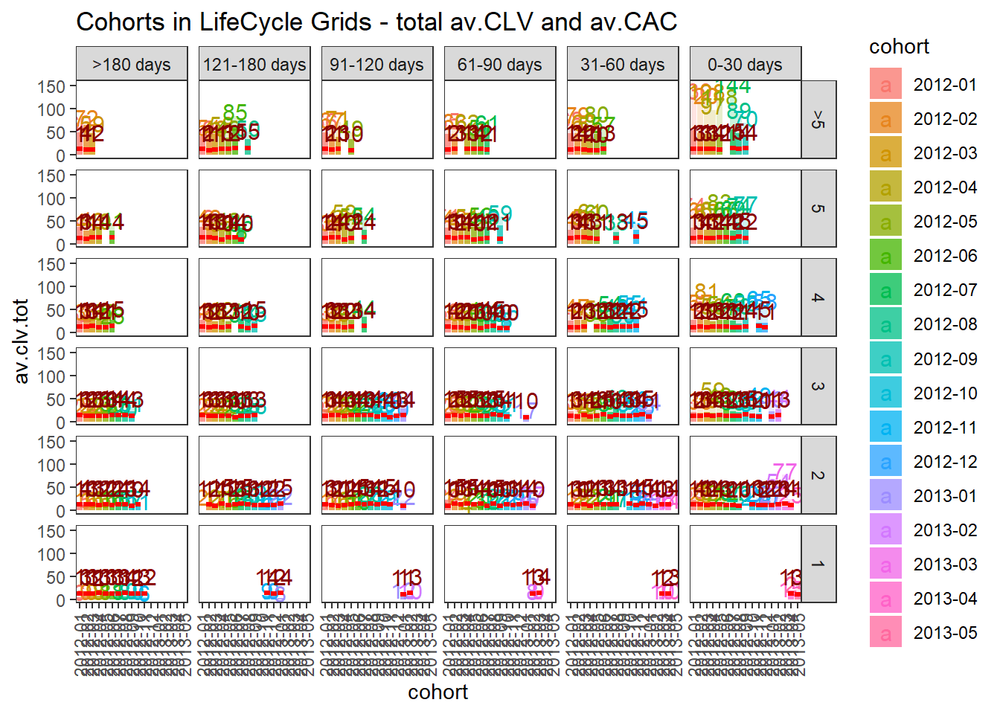
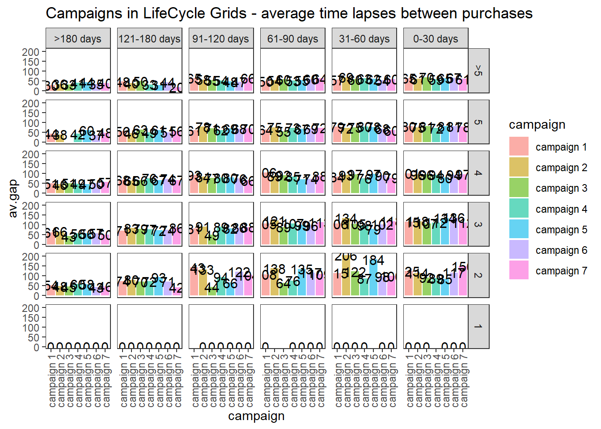
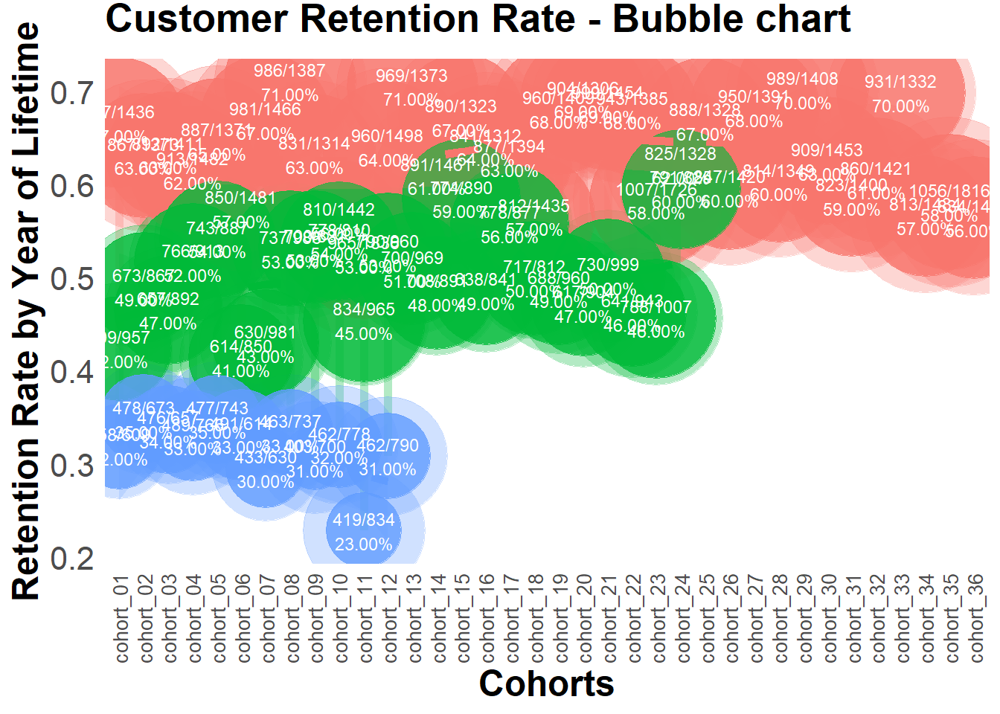
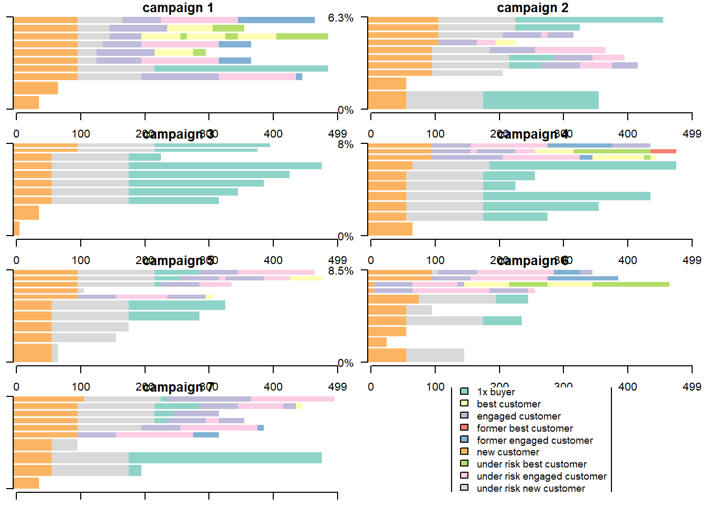

Chapter 15 Models
This theoretical/analytical model part of this section comes mostly from professor Murali Mantrala’s Marketing Model Seminar.
Marketing models consists of
- Analytical Model: pure mathematical-based research
- Empirical Model: data analysis.
“A model is a representation of the most important elements of a perceived real-world system.”
Marketing model improves decision-making
Econometric models
- Description
- Prediction
- Simulation
Optimization models
- maximize profit using market response model, cost functions, or any constraints.
Quasi- and Field experimental analyses
Conjoint Choice Experiments.
“A decision calculus will be defined as a model-based set of procedures for processing data and judgments to assist a manager in his decision making”(Little 1976):
- simple
- robust
- easy to control
- adaptive
- as complete as possible
- easy to communicate with
15.1 Market Response Model
Marketing Inputs:
- Selling effort
- advertising spending
- promotional spending
\[ \downarrow \]
Marketing Outputs:
- sales
- share
- profit
- awareness
")
Give phenomena for a good model:
- P1: Dynamic sales response involves a sales growth rate and a sales decay rate that are different
- P2: Steady-state response can be concave or S-shaped. Positive sales at 0 adverting.
- P3: Competitive effects
- P4: Advertising effectiveness dynamics due to changes in media, copy, and other factors.
- P5: Sales still increase or fall off even as advertising is held constant.
Saunder (1987) phenomena
- P1: Output = 0 when Input = 0
- P2: The relationship between input and output is linear
- P3: Returns decrease as the scale of input increases (i.e., additional unit of input gives less output)
- P4: Output cannot exceed some level (i.e., saturation)
- P5: Returns increase as scale of input increases (i.e., additional unit of input gives more output)
- P6: Returns first increase and then decrease as input increases (i.e., S-shaped return)
- P7: Input must exceed some level before it produces any output (i.e., threshold)
- P8: Beyond some level of input, output declines (i.e., supersaturation point)
")
Aggregate Response Models
Linear model: \(Y = a + bX\)
Through origin
can only handle constant returns to scale (i.e., can’t handle concave, convex, and S-shape)
The Power Series/Polynomial model: \(Y = a + bX + c X^2 + dX^3 + ...\)
- can’t handle saturation and threshold
Fraction root model/ Power model: \(Y = a+bX^c\) where c is prespecified
c = 1/2, called square root model
c = -1, called reciprocal model
c can be interpreted as elasticity if a = 0.
c = 1, linear
c <1, decreasing return
c>1, increasing returns
Semilog model: \(Y = a + b \ln X\)
- Good when constant percentage increase in marketing effort (X) result in constant absolute increase in sales (Y)
Exponential model: \(Y = ae^{bX}\) where X >0
b > 0, increasing returns and convex
b < 0, decreasing returns and saturation
Modified exponential model: \(Y = a(1-e^{-bX}) +c\)
Decreasing returns and saturation
upper bound = a + c
lower bound = c
typically used in selling effort
Logistic model: \(Y = \frac{a}{a+ e^{-(b+cX)}}+d\)
increasing return followed by decreasing return to scale, S-shape
saturation = a + d
good with saturation and s-shape
Gompertz model
ADBUDG model (Little 1970) : \(Y = b + (a-b)\frac{X^c}{d + X^c}\)
c > 1, S-shaped
0 < c < 1
Concave
saturation effect
upper bound at a
lower bound at b
typically used in advertising and selling effort.
can handle, through origin, concave, saturation, S-shape
Additive model for handling multiple Instruments: \(Y = af(X_1) + bg(X_2)\)
Multiplicative model for handling multiple instruments: \(Y = aX_1^b X_2^c\) where c and c are elasticities. More generally, \(Y = af(X_1)\times bg(X_2)\)
Multiplicative and additive model: \(Y = af(X_1) + bg(X_2) + cf(X_1) g(X_2)\)
Dynamic response model: \(Y_t = a_0 + a_1 X_t + \lambda Y_{t-1}\) where \(a_1\) = current effect, \(\lambda\) = carry-over effect
Dynamic Effects
Carry-over effect: current marketing expenditure influences future sales
- Advertising adstock/ advertising carry-over is the same thing: lagged effect of advertising on sales
Delayed-response effect: delays between when marketing investments and their impact
Customer holdout effects
Hysteresis effect
New trier and wear-out effect
Stocking effect
Simple Decay-effect model:
\[ A_t = T_t + \lambda T_{t-1}, t = 1,..., \]
where
- \(A_t\) = Adstock at time t
- \(T_t\) = value of advertising spending at time t
- \(\lambda\) = decay/ lag weight parameter
Response Models can be characterized by:
The number of marketing variables
whether they include competition or not
the nature of the relationship between the input variables
- Linear vs. S-shape
whether the situation is static vs. dynamic
whether the models reflect individual or aggregate response
the level of demand analyzed
- sales vs. market share
Market Share Model and Competitive Effects: \(Y = M \times V\) where
Y = Brand sales models
V = product class sales models
M = market-share models
Market share (attraction) models
\[ M_i = \frac{A_i}{A_1 + ..+ A_n} \]
where \(A_i\) attractiveness of brand i
Individual Response Model:
Multinomial logit model representing the probability of individual i choosing brand l is
\[ P_{il} = \frac{e^{A_{il}}}{\sum_j e^{A_{ij}}} \]
where
- \(A_{ij}\) = attractiveness of product j for individual i \(A_{ij} = \sum_k w_k b_{ijk}\)
- \(b_{ijk}\) = individual i’s evaluation of product j on product attribute k, where the summation is over all the
products that individual
iis considering to purchase - \(w_k\) = importance weight associated with attribute k in forming product preferences.
15.2 Marketing Resource Allocation Models
This section is based on (Mantrala, Sinha, and Zoltners 1992)
15.2.1 Case study 1
Concave sales response function
- Optimal vs. proportional at different investment levels
- Profit maximization perspective of aggregate function
\[ s_i = k_i (1- e^{-b_i x_i}) \]
where
- \(s_i\) = current-period sales response (dollars / period)
- \(x_i\) = amount of resource allocated to submarket i
- \(b_i\) = rate at which sales approach saturation
- \(k_i\) = sales potential
Allocation functions
Fixed proportion
\(R_i\) = Investment level (dollars/period)
\(w_i\) = fixed proportion or weights
\[ \hat{x}_i = w_i R; \\ \sum_{t=1}^2 w_t = 1; 0 < w_t < 1 \]
Informed allocator
- optimal allocations via marginal analysis (maximize profits)
\[ max C = m \sum_{i = 1}^2 k_i (1- e^{-b_i x_i}) \\ x_1 + x_2 \le R; x_i \ge 0 \text{ for } i = 1,2 \\ x_1 = \frac{1}{(b_1 + b_2)(b_2 R + \ln(\frac{k_1b_1}{k_2b_2})} \\ x_2 = \frac{1}{(b_1 + b_2)(b_2 R + \ln(\frac{k_2b_2}{k_1b_1})} \]
15.2.2 Case study 2
S-shaped sales response function:
- Optimal vs. proportional at different investment levels
- Profit maximization perspective of aggregate function
15.2.3 Case study 3
Quadratic-form stochastic response function
- Optimal allocation only with risk averse and risk neutral investors.
15.3 Meta-analyses of Econometric Marketing Models
15.4 Dynamic Advertising Effects and Spending Models
15.5 Marketing Mix Optimization Models
Check this post for implementation in Python
15.6 New Product Diffusion Models
15.7 Two-sided Platform Marketing Models
Example of Marketing Mix Model in practice: link
15.8 Attribution Models
15.8.1 Ordered Shapley
Based on (Zhao, Mahboobi, and Bagheri 2018) (to access paper) Cooperative game theory: look at the marginal contribution of each player in the game, where Shapley value (i..e, the credit assigned to each individual) is the expected value value of the marginal contribution over all possible permutations (e.g., all possible sequences) of the players.
Shapely value considered:
- marginal contribution of each player (i.e., channel)
- sequence of joining the coalition (i.e., customer journey).
Typically, we can’t apply the Shapley Value method due to computational burden (you need all possible permutations). And a drawback is that all the credit must be divided among your channels, if you have missing channels, then it will distort the estimates of other channels’ estimates.
It’s hard to use Shapley value model for model comparison since we have no “ground truth”
Marketing application:
library("GameTheory")15.8.2 Markov Model
Markov chains maps the movement and gives a probability distribution, for moving from one state to another state. A Markov Chain has three properties:
- State space – set of all the states in which process could potentially exist
- Transition operator –the probability of moving from one state to other state
- Current state probability distribution – probability distribution of being in any one of the states at the start of the process
In mathematically sense
\[ w_{ij}= P(X_t = s_j|X_{t-1}=s_i),0 \le w_{ij} \le 1, \sum_{j=1}^N w_{ij} =1 \forall i \]
where
- The Transition Probability (\(w_{ij}\)) = The Probability of the Previous State ( \(X_{t-1}\)) Given the Current State (\(X_t\))
- The Transition Probability (\(w_{ij}\)) is No Less Than 0 and No Greater Than 1
- The Sum of the Transition Probabilities Equals 1 (i.e., Everyone Must Go Somewhere)
To examine a particular node in the Markov graph, we use removal effect (\(s_i\)) to see its contribution to a conversion. In another word, the Removal Effect is the probability of converting when a step is completely removed; all sequences that had to go through that step are now sent directly to the null node
Each node is called transition states
The probability of moving from one channel to another channel is called transition probability.
first-order or “memory-free” Markov graph is called “memory-free” because the probability of reaching one state depends only on the previous state visited.
- Order 0: Do not care about where the you came from or what step the you are on, only the probability of going to any state.
- Order 1: Looks back zero steps. You are currently at a state. The probability of going anywhere is based on being at that step.
- Order 2: Looks back one step. You came from state A and are currently at state B. The probability of going anywhere is based on where you were and where you are.
- Order 3: Looks back two steps. You came from state A after state B and are currently at state C. The probability of going anywhere is based on where you were and where you are.
- Order 4: Looks back three steps. You came from state A after B after C and are currently at state D. The probability of going anywhere is based on where you were and where you are.
15.8.2.1 Example 1
This section is by Analytics Vidhya
# #Install the libraries
# install.packages("ChannelAttribution")
# install.packages("ggplot2")
# install.packages("reshape")
# install.packages("dplyr")
# install.packages("plyr")
# install.packages("reshape2")
# install.packages("markovchain")
# install.packages("plotly")
#Load the libraries
library("ChannelAttribution")
library("ggplot2")
library("reshape")
library("dplyr")
library("plyr")
library("reshape2")
library("markovchain")
library("plotly")
#Read the data into R
channel = read.csv("images/Channel_attribution.csv", header = T) %>% select(-c(Output))
head(channel, n = 2)## R05A.01 R05A.02 R05A.03 R05A.04 R05A.05 R05A.06 R05A.07 R05A.08 R05A.09
## 1 16 4 3 5 10 8 6 8 13
## 2 2 1 9 10 1 4 3 21 NA
## R05A.10 R05A.11 R05A.12 R05A.13 R05A.14 R05A.15 R05A.16 R05A.17 R05A.18
## 1 20 21 NA NA NA NA NA NA NA
## 2 NA NA NA NA NA NA NA NA NA
## R05A.19 R05A.20
## 1 NA NA
## 2 NA NAThe number represents:
- 1-19 are various channels
- 20 – customer has decided which device to buy;
- 21 – customer has made the final purchase, and;
- 22 – customer hasn’t decided yet.
Pre-processing
for (row in 1:nrow(channel)){
if (21 %in% channel[row,]){
channel$convert = 1
}
}
column = colnames(channel)
channel$path = do.call(paste, c(channel, sep = " > "))
head(channel$path)## [1] "16 > 4 > 3 > 5 > 10 > 8 > 6 > 8 > 13 > 20 > 21 > NA > NA > NA > NA > NA > NA > NA > NA > NA > 1"
## [2] "2 > 1 > 9 > 10 > 1 > 4 > 3 > 21 > NA > NA > NA > NA > NA > NA > NA > NA > NA > NA > NA > NA > 1"
## [3] "9 > 13 > 20 > 16 > 15 > 21 > NA > NA > NA > NA > NA > NA > NA > NA > NA > NA > NA > NA > NA > NA > 1"
## [4] "8 > 15 > 20 > 21 > NA > NA > NA > NA > NA > NA > NA > NA > NA > NA > NA > NA > NA > NA > NA > NA > 1"
## [5] "16 > 9 > 13 > 20 > 21 > NA > NA > NA > NA > NA > NA > NA > NA > NA > NA > NA > NA > NA > NA > NA > 1"
## [6] "1 > 11 > 8 > 4 > 9 > 21 > NA > NA > NA > NA > NA > NA > NA > NA > NA > NA > NA > NA > NA > NA > 1"for(row in 1:nrow(channel)){
channel$path[row] = strsplit(channel$path[row], " > 21")[[1]][1]
}
channel_fin = channel[,c(22,21)]
channel_fin = ddply(channel_fin,~path,summarise, conversion= sum(convert))
head(channel_fin)## path conversion
## 1 1 > 1 > 1 > 20 1
## 2 1 > 1 > 12 > 12 1
## 3 1 > 1 > 14 > 13 > 12 > 20 1
## 4 1 > 1 > 3 > 13 > 3 > 20 1
## 5 1 > 1 > 3 > 17 > 17 1
## 6 1 > 1 > 6 > 1 > 12 > 20 > 12 1Data = channel_fin
head(Data)## path conversion
## 1 1 > 1 > 1 > 20 1
## 2 1 > 1 > 12 > 12 1
## 3 1 > 1 > 14 > 13 > 12 > 20 1
## 4 1 > 1 > 3 > 13 > 3 > 20 1
## 5 1 > 1 > 3 > 17 > 17 1
## 6 1 > 1 > 6 > 1 > 12 > 20 > 12 1heuristic model
H <- heuristic_models(Data, 'path', 'conversion', var_value='conversion')
H## channel_name first_touch_conversions first_touch_value
## 1 1 130 130
## 2 20 0 0
## 3 12 75 75
## 4 14 34 34
## 5 13 320 320
## 6 3 168 168
## 7 17 31 31
## 8 6 50 50
## 9 8 56 56
## 10 10 547 547
## 11 11 66 66
## 12 16 111 111
## 13 2 199 199
## 14 4 231 231
## 15 7 26 26
## 16 5 62 62
## 17 9 250 250
## 18 15 22 22
## 19 18 4 4
## 20 19 10 10
## last_touch_conversions last_touch_value linear_touch_conversions
## 1 18 18 73.773661
## 2 1701 1701 473.998171
## 3 23 23 76.127863
## 4 25 25 56.335744
## 5 76 76 204.039552
## 6 21 21 117.609677
## 7 47 47 76.583847
## 8 20 20 54.707124
## 9 17 17 53.677862
## 10 42 42 211.822393
## 11 33 33 107.109048
## 12 95 95 156.049086
## 13 18 18 94.111668
## 14 88 88 250.784033
## 15 15 15 33.435991
## 16 23 23 74.900402
## 17 71 71 194.071690
## 18 47 47 65.159225
## 19 2 2 5.026587
## 20 10 10 12.676375
## linear_touch_value
## 1 73.773661
## 2 473.998171
## 3 76.127863
## 4 56.335744
## 5 204.039552
## 6 117.609677
## 7 76.583847
## 8 54.707124
## 9 53.677862
## 10 211.822393
## 11 107.109048
## 12 156.049086
## 13 94.111668
## 14 250.784033
## 15 33.435991
## 16 74.900402
## 17 194.071690
## 18 65.159225
## 19 5.026587
## 20 12.676375First Touch Conversion: credit is given to the first touch point.
Last Touch Conversion: credit is given to the last touch point.
Linear Touch Conversion: All channels/touch points are given equal credit in the conversion.
Markov model
M <- markov_model(Data, 'path', 'conversion', var_value='conversion', order = 1)##
## Number of simulations: 100000 - Convergence reached: 2.05% < 5.00%
##
## Percentage of simulated paths that successfully end before maximum number of steps (17) is reached: 99.40%M## channel_name total_conversion total_conversion_value
## 1 1 82.805970 82.805970
## 2 20 439.582090 439.582090
## 3 12 81.253731 81.253731
## 4 14 64.238806 64.238806
## 5 13 197.791045 197.791045
## 6 3 122.328358 122.328358
## 7 17 86.985075 86.985075
## 8 6 58.985075 58.985075
## 9 8 60.656716 60.656716
## 10 10 209.850746 209.850746
## 11 11 115.402985 115.402985
## 12 16 159.820896 159.820896
## 13 2 97.074627 97.074627
## 14 4 222.149254 222.149254
## 15 7 40.597015 40.597015
## 16 5 80.537313 80.537313
## 17 9 178.865672 178.865672
## 18 15 72.358209 72.358209
## 19 18 6.567164 6.567164
## 20 19 14.149254 14.149254combine the two models
# Merges the two data frames on the "channel_name" column.
R <- merge(H, M, by='channel_name')
# Select only relevant columns
R1 <- R[, (colnames(R) %in% c('channel_name', 'first_touch_conversions', 'last_touch_conversions', 'linear_touch_conversions', 'total_conversion'))]
# Transforms the dataset into a data frame that ggplot2 can use to plot the outcomes
R1 <- melt(R1, id='channel_name')# Plot the total conversions
ggplot(R1, aes(channel_name, value, fill = variable)) +
geom_bar(stat='identity', position='dodge') +
ggtitle('TOTAL CONVERSIONS') +
theme(axis.title.x = element_text(vjust = -2)) +
theme(axis.title.y = element_text(vjust = +2)) +
theme(title = element_text(size = 16)) +
theme(plot.title=element_text(size = 20)) +
ylab("")
and then check the final results.
15.8.2.2 Example 2
Example code by Sergey Bryl’
library(dplyr)
library(reshape2)
library(ggplot2)
library(ggthemes)
library(ggrepel)
library(RColorBrewer)
library(ChannelAttribution)
library(markovchain)
##### simple example #####
# creating a data sample
df1 <- data.frame(path = c('c1 > c2 > c3', 'c1', 'c2 > c3'), conv = c(1, 0, 0), conv_null = c(0, 1, 1))
# calculating the model
mod1 <- markov_model(df1,
var_path = 'path',
var_conv = 'conv',
var_null = 'conv_null',
out_more = TRUE)
# extracting the results of attribution
df_res1 <- mod1$result
# extracting a transition matrix
df_trans1 <- mod1$transition_matrix
df_trans1 <- dcast(df_trans1, channel_from ~ channel_to, value.var = 'transition_probability')
### plotting the Markov graph ###
df_trans <- mod1$transition_matrix
# adding dummies in order to plot the graph
df_dummy <- data.frame(channel_from = c('(start)', '(conversion)', '(null)'),
channel_to = c('(start)', '(conversion)', '(null)'),
transition_probability = c(0, 1, 1))
df_trans <- rbind(df_trans, df_dummy)
# ordering channels
df_trans$channel_from <- factor(df_trans$channel_from,levels = c('(start)','(conversion)', '(null)', 'c1', 'c2', 'c3'))
df_trans$channel_to <- factor(df_trans$channel_to,levels = c('(start)', '(conversion)', '(null)', 'c1', 'c2', 'c3'))
df_trans <- dcast(df_trans, channel_from ~ channel_to, value.var ='transition_probability')
# creating the markovchain object
trans_matrix <- matrix(data = as.matrix(df_trans[, -1]),nrow = nrow(df_trans[, -1]), ncol = ncol(df_trans[, -1]),dimnames = list(c(as.character(df_trans[,1])),c(colnames(df_trans[, -1]))))
trans_matrix[is.na(trans_matrix)] <- 0
# trans_matrix1 <- new("markovchain", transitionMatrix = trans_matrix)
#
# # plotting the graph
# plot(trans_matrix1, edge.arrow.size = 0.35)# simulating the "real" data
set.seed(354)
df2 <- data.frame(client_id = sample(c(1:1000), 5000, replace = TRUE),
date = sample(c(1:32), 5000, replace = TRUE),
channel = sample(c(0:9), 5000, replace = TRUE,
prob = c(0.1, 0.15, 0.05, 0.07, 0.11, 0.07, 0.13, 0.1, 0.06, 0.16)))
df2$date <- as.Date(df2$date, origin = "2015-01-01")
df2$channel <- paste0('channel_', df2$channel)
# aggregating channels to the paths for each customer
df2 <- df2 %>%
arrange(client_id, date) %>%
group_by(client_id) %>%
summarise(path = paste(channel, collapse = ' > '),
# assume that all paths were finished with conversion
conv = 1,
conv_null = 0) %>%
ungroup()
# calculating the models (Markov and heuristics)
mod2 <- markov_model(df2,
var_path = 'path',
var_conv = 'conv',
var_null = 'conv_null',
out_more = TRUE)##
## Number of simulations: 100000 - Convergence reached: 1.40% < 5.00%
##
## Percentage of simulated paths that successfully end before maximum number of steps (13) is reached: 95.98%# heuristic_models() function doesn't work for me, therefore I used the manual calculations
# instead of:
#h_mod2 <- heuristic_models(df2, var_path = 'path', var_conv = 'conv')
df_hm <- df2 %>%
mutate(channel_name_ft = sub('>.*', '', path),
channel_name_ft = sub(' ', '', channel_name_ft),
channel_name_lt = sub('.*>', '', path),
channel_name_lt = sub(' ', '', channel_name_lt))
# first-touch conversions
df_ft <- df_hm %>%
group_by(channel_name_ft) %>%
summarise(first_touch_conversions = sum(conv)) %>%
ungroup()
# last-touch conversions
df_lt <- df_hm %>%
group_by(channel_name_lt) %>%
summarise(last_touch_conversions = sum(conv)) %>%
ungroup()
h_mod2 <- merge(df_ft, df_lt, by.x = 'channel_name_ft', by.y = 'channel_name_lt')
# merging all models
all_models <- merge(h_mod2, mod2$result, by.x = 'channel_name_ft', by.y = 'channel_name')
colnames(all_models)[c(1, 4)] <- c('channel_name', 'attrib_model_conversions')library("RColorBrewer")
library("ggthemes")
library("ggrepel")
############## visualizations ##############
# transition matrix heatmap for "real" data
df_plot_trans <- mod2$transition_matrix
cols <- c("#e7f0fa", "#c9e2f6", "#95cbee", "#0099dc", "#4ab04a", "#ffd73e", "#eec73a",
"#e29421", "#e29421", "#f05336", "#ce472e")
t <- max(df_plot_trans$transition_probability)
ggplot(df_plot_trans, aes(y = channel_from, x = channel_to, fill = transition_probability)) +
theme_minimal() +
geom_tile(colour = "white", width = .9, height = .9) +
scale_fill_gradientn(colours = cols, limits = c(0, t),
breaks = seq(0, t, by = t/4),
labels = c("0", round(t/4*1, 2), round(t/4*2, 2), round(t/4*3, 2), round(t/4*4, 2)),
guide = guide_colourbar(ticks = T, nbin = 50, barheight = .5, label = T, barwidth = 10)) +
geom_text(aes(label = round(transition_probability, 2)), fontface = "bold", size = 4) +
theme(legend.position = 'bottom',
legend.direction = "horizontal",
panel.grid.major = element_blank(),
panel.grid.minor = element_blank(),
plot.title = element_text(size = 20, face = "bold", vjust = 2, color = 'black', lineheight = 0.8),
axis.title.x = element_text(size = 24, face = "bold"),
axis.title.y = element_text(size = 24, face = "bold"),
axis.text.y = element_text(size = 8, face = "bold", color = 'black'),
axis.text.x = element_text(size = 8, angle = 90, hjust = 0.5, vjust = 0.5, face = "plain")) +
ggtitle("Transition matrix heatmap")
# models comparison
all_mod_plot <- reshape2::melt(all_models, id.vars = 'channel_name', variable.name = 'conv_type')
all_mod_plot$value <- round(all_mod_plot$value)
# slope chart
pal <- colorRampPalette(brewer.pal(10, "Set1"))## Warning in brewer.pal(10, "Set1"): n too large, allowed maximum for palette Set1 is 9
## Returning the palette you asked for with that many colorsggplot(all_mod_plot, aes(x = conv_type, y = value, group = channel_name)) +
theme_solarized(base_size = 18, base_family = "", light = TRUE) +
scale_color_manual(values = pal(10)) +
scale_fill_manual(values = pal(10)) +
geom_line(aes(color = channel_name), size = 2.5, alpha = 0.8) +
geom_point(aes(color = channel_name), size = 5) +
geom_label_repel(aes(label = paste0(channel_name, ': ', value), fill = factor(channel_name)),
alpha = 0.7,
fontface = 'bold', color = 'white', size = 5,
box.padding = unit(0.25, 'lines'), point.padding = unit(0.5, 'lines'),
max.iter = 100) +
theme(legend.position = 'none',
legend.title = element_text(size = 16, color = 'black'),
legend.text = element_text(size = 16, vjust = 2, color = 'black'),
plot.title = element_text(size = 20, face = "bold", vjust = 2, color = 'black', lineheight = 0.8),
axis.title.x = element_text(size = 24, face = "bold"),
axis.title.y = element_text(size = 16, face = "bold"),
axis.text.x = element_text(size = 16, face = "bold", color = 'black'),
axis.text.y = element_blank(),
axis.ticks.x = element_blank(),
axis.ticks.y = element_blank(),
panel.border = element_blank(),
panel.grid.major = element_line(colour = "grey", linetype = "dotted"),
panel.grid.minor = element_blank(),
strip.text = element_text(size = 16, hjust = 0.5, vjust = 0.5, face = "bold", color = 'black'),
strip.background = element_rect(fill = "#f0b35f")) +
labs(x = 'Model', y = 'Conversions') +
ggtitle('Models comparison') +
guides(colour = guide_legend(override.aes = list(size = 4)))
Additional concerns:
library(tidyverse)
library(reshape2)
library(ggthemes)
library(ggrepel)
library(RColorBrewer)
library(ChannelAttribution)
library(markovchain)
library(visNetwork)
library(expm)
library(stringr)
library(purrr)
library(purrrlyr)
##### simulating the "real" data #####
set.seed(454)
df_raw <- data.frame(customer_id = paste0('id', sample(c(1:20000), replace = TRUE)), date = as.Date(rbeta(80000, 0.7, 10) * 100, origin = "2016-01-01"), channel = paste0('channel_', sample(c(0:7), 80000, replace = TRUE, prob = c(0.2, 0.12, 0.03, 0.07, 0.15, 0.25, 0.1, 0.08))) ) %>%
group_by(customer_id) %>%
mutate(conversion = sample(c(0, 1), n(), prob = c(0.975, 0.025), replace = TRUE)) %>%
ungroup() %>%
dmap_at(c(1, 3), as.character) %>%
arrange(customer_id, date)
df_raw <- df_raw %>%
mutate(channel = ifelse(channel == 'channel_2', NA, channel))
head(df_raw, n = 2)## # A tibble: 2 x 4
## customer_id date channel conversion
## <chr> <date> <chr> <dbl>
## 1 id1 2016-01-02 channel_7 0
## 2 id1 2016-01-09 channel_4 015.8.2.2.1 1. Customers will be at different stage of purchase journey after each conversion.
First-time buyer’s journey will look different from n-times buyer’s (e.g., he will not start at website )
You can create your own code to split data into customers in different stages.
##### splitting paths #####
df_paths <- df_raw %>%
group_by(customer_id) %>%
mutate(path_no = ifelse(is.na(lag(cumsum(conversion))), 0, lag(cumsum(conversion))) + 1) %>% # add the path's serial number by using the lagged cumulative sum of conversion binary marks
ungroup()
head(df_paths)## # A tibble: 6 x 5
## customer_id date channel conversion path_no
## <chr> <date> <chr> <dbl> <dbl>
## 1 id1 2016-01-02 channel_7 0 1
## 2 id1 2016-01-09 channel_4 0 1
## 3 id1 2016-01-18 channel_5 1 1
## 4 id1 2016-01-20 channel_4 1 2
## 5 id100 2016-01-01 channel_0 0 1
## 6 id100 2016-01-01 channel_0 0 1attribution path for first-time buyers:
df_paths_1 <- df_paths %>%
filter(path_no == 1) %>%
select(-path_no)15.8.2.2.2 2. Handle missing data
We might have missing data on the channel or do not want to attribute a path (e.g., Direct Channel). We can either
- Remove NA/Channel
- Use the previous channel in its place.
In the first-order Markov chains, the results are unchanged because duplicated channels don’t affect the calculation.
##### replace some channels #####
df_path_1_clean <- df_paths_1 %>%
# removing NAs
filter(!is.na(channel)) %>%
# adding order of channels in the path
group_by(customer_id) %>%
mutate(ord = c(1:n()),
is_non_direct = ifelse(channel == 'channel_6', 0, 1),
is_non_direct_cum = cumsum(is_non_direct)) %>%
# removing Direct (channel_6) when it is the first in the path
filter(is_non_direct_cum != 0) %>%
# replacing Direct (channel_6) with the previous touch point
mutate(channel = ifelse(channel == 'channel_6', channel[which(channel != 'channel_6')][is_non_direct_cum], channel)) %>%
ungroup() %>%
select(-ord, -is_non_direct, -is_non_direct_cum)15.8.2.2.3 3. one vs. multi-channel paths
We need to calculate the weighted importance for each channel because the sum of the Removal Effects doesn’t equal to 1. In case we have a path with a unique channel, the Removal Effect and importance of this channel for that exact path is 1. However, weighting with other multi-channel paths will decrease the importance of one-channel occurrences. That means that, in case we have a channel that occurs in one-channel paths, usually it will be underestimated if attributed with multi-channel paths.
There is also a pretty straight logic behind splitting – for one-channel paths, we definitely know the channel that brought a conversion and we don’t need to distribute that value into other channels.
To account for one-channel path:
- Split data for paths with one or more unique channels
- Calculate total conversions for one-channel paths and compute the Markov model for multi-channel paths
- Summarize results for each channel.
##### one- and multi-channel paths #####
df_path_1_clean <- df_path_1_clean %>%
group_by(customer_id) %>%
mutate(uniq_channel_tag = ifelse(length(unique(channel)) == 1, TRUE, FALSE)) %>%
ungroup()
df_path_1_clean_uniq <- df_path_1_clean %>%
filter(uniq_channel_tag == TRUE) %>%
select(-uniq_channel_tag)
df_path_1_clean_multi <- df_path_1_clean %>%
filter(uniq_channel_tag == FALSE) %>%
select(-uniq_channel_tag)
### experiment ###
# attribution model for all paths
df_all_paths <- df_path_1_clean %>%
group_by(customer_id) %>%
summarise(path = paste(channel, collapse = ' > '),
conversion = sum(conversion)) %>%
ungroup() %>%
filter(conversion == 1)
mod_attrib <- markov_model(df_all_paths,
var_path = 'path',
var_conv = 'conversion',
out_more = TRUE)##
## Number of simulations: 100000 - Convergence reached: 1.28% < 5.00%
##
## Percentage of simulated paths that successfully end before maximum number of steps (19) is reached: 99.92%mod_attrib$removal_effects## channel_name removal_effects
## 1 channel_7 0.2812250
## 2 channel_4 0.4284428
## 3 channel_5 0.6056845
## 4 channel_0 0.5367294
## 5 channel_1 0.3820056
## 6 channel_3 0.2535028mod_attrib$result## channel_name total_conversions
## 1 channel_7 192.8653
## 2 channel_4 293.8279
## 3 channel_5 415.3811
## 4 channel_0 368.0913
## 5 channel_1 261.9811
## 6 channel_3 173.8533d_all <- data.frame(mod_attrib$result)
# attribution model for splitted multi and unique channel paths
df_multi_paths <- df_path_1_clean_multi %>%
group_by(customer_id) %>%
summarise(path = paste(channel, collapse = ' > '),
conversion = sum(conversion)) %>%
ungroup() %>%
filter(conversion == 1)
mod_attrib_alt <- markov_model(df_multi_paths,
var_path = 'path',
var_conv = 'conversion',
out_more = TRUE)##
## Number of simulations: 100000 - Convergence reached: 1.21% < 5.00%
##
## Percentage of simulated paths that successfully end before maximum number of steps (19) is reached: 99.59%mod_attrib_alt$removal_effects## channel_name removal_effects
## 1 channel_7 0.3265696
## 2 channel_4 0.4844802
## 3 channel_5 0.6526369
## 4 channel_0 0.5814164
## 5 channel_1 0.4343546
## 6 channel_3 0.2898041mod_attrib_alt$result## channel_name total_conversions
## 1 channel_7 150.9460
## 2 channel_4 223.9350
## 3 channel_5 301.6599
## 4 channel_0 268.7406
## 5 channel_1 200.7661
## 6 channel_3 133.9524# adding unique paths
df_uniq_paths <- df_path_1_clean_uniq %>%
filter(conversion == 1) %>%
group_by(channel) %>%
summarise(conversions = sum(conversion)) %>%
ungroup()
d_multi <- data.frame(mod_attrib_alt$result)
d_split <- full_join(d_multi, df_uniq_paths, by = c('channel_name' = 'channel')) %>%
mutate(result = total_conversions + conversions)
sum(d_all$total_conversions)## [1] 1706sum(d_split$result)## [1] 170615.8.2.2.4 4. Higher Order Markov Chains
Since the transition matrix stays the same in the first order Markov, having duplicates will not affect the result. But starting from the second order order Markov, you will have different results when skipping duplicates. In order to check the effect of skipping duplicates in the first-order Markov chain, we will use my script for “manual” calculation because the package skips duplicates automatically.
##### Higher order of Markov chains and consequent duplicated channels in the path #####
# computing transition matrix - 'manual' way
df_multi_paths_m <- df_multi_paths %>%
mutate(path = paste0('(start) > ', path, ' > (conversion)'))
m <- max(str_count(df_multi_paths_m$path, '>')) + 1 # maximum path length
df_multi_paths_cols <- reshape2::colsplit(string = df_multi_paths_m$path, pattern = ' > ', names = c(1:m))
colnames(df_multi_paths_cols) <- paste0('ord_', c(1:m))
df_multi_paths_cols[df_multi_paths_cols == ''] <- NA
df_res <- vector('list', ncol(df_multi_paths_cols) - 1)
for (i in c(1:(ncol(df_multi_paths_cols) - 1))) {
df_cache <- df_multi_paths_cols %>%
select(num_range("ord_", c(i, i+1))) %>%
na.omit() %>%
group_by_(.dots = c(paste0("ord_", c(i, i+1)))) %>%
summarise(n = n()) %>%
ungroup()
colnames(df_cache)[c(1, 2)] <- c('channel_from', 'channel_to')
df_res[[i]] <- df_cache
}## Warning: `group_by_()` was deprecated in dplyr 0.7.0.
## Please use `group_by()` instead.
## See vignette('programming') for more helpdf_res <- do.call('rbind', df_res)
df_res_tot <- df_res %>%
group_by(channel_from, channel_to) %>%
summarise(n = sum(n)) %>%
ungroup() %>%
group_by(channel_from) %>%
mutate(tot_n = sum(n),
perc = n / tot_n) %>%
ungroup()
df_dummy <- data.frame(channel_from = c('(start)', '(conversion)', '(null)'),
channel_to = c('(start)', '(conversion)', '(null)'),
n = c(0, 0, 0),
tot_n = c(0, 0, 0),
perc = c(0, 1, 1))
df_res_tot <- rbind(df_res_tot, df_dummy)
# comparing transition matrices
trans_matrix_prob_m <- dcast(df_res_tot, channel_from ~ channel_to, value.var = 'perc', fun.aggregate = sum)
trans_matrix_prob <- data.frame(mod_attrib_alt$transition_matrix)
trans_matrix_prob <- dcast(trans_matrix_prob, channel_from ~ channel_to, value.var = 'transition_probability')
# computing attribution - 'manual' way
channels_list <- df_path_1_clean_multi %>%
filter(conversion == 1) %>%
distinct(channel)
channels_list <- c(channels_list$channel)
df_res_ini <- df_res_tot %>% select(channel_from, channel_to)
df_attrib <- vector('list', length(channels_list))
for (i in c(1:length(channels_list))) {
channel <- channels_list[i]
df_res1 <- df_res %>%
mutate(channel_from = ifelse(channel_from == channel, NA, channel_from),
channel_to = ifelse(channel_to == channel, '(null)', channel_to)) %>%
na.omit()
df_res_tot1 <- df_res1 %>%
group_by(channel_from, channel_to) %>%
summarise(n = sum(n)) %>%
ungroup() %>%
group_by(channel_from) %>%
mutate(tot_n = sum(n),
perc = n / tot_n) %>%
ungroup()
df_res_tot1 <- rbind(df_res_tot1, df_dummy) # adding (start), (conversion) and (null) states
df_res_tot1 <- left_join(df_res_ini, df_res_tot1, by = c('channel_from', 'channel_to'))
df_res_tot1[is.na(df_res_tot1)] <- 0
df_trans1 <- dcast(df_res_tot1, channel_from ~ channel_to, value.var = 'perc', fun.aggregate = sum)
trans_matrix_1 <- df_trans1
rownames(trans_matrix_1) <- trans_matrix_1$channel_from
trans_matrix_1 <- as.matrix(trans_matrix_1[, -1])
inist_n1 <- dcast(df_res_tot1, channel_from ~ channel_to, value.var = 'n', fun.aggregate = sum)
rownames(inist_n1) <- inist_n1$channel_from
inist_n1 <- as.matrix(inist_n1[, -1])
inist_n1[is.na(inist_n1)] <- 0
inist_n1 <- inist_n1['(start)', ]
res_num1 <- inist_n1 %*% (trans_matrix_1 %^% 100000)
df_cache <- data.frame(channel_name = channel,
conversions = as.numeric(res_num1[1, 1]))
df_attrib[[i]] <- df_cache
}
df_attrib <- do.call('rbind', df_attrib)
# computing removal effect and results
tot_conv <- sum(df_multi_paths_m$conversion)
df_attrib <- df_attrib %>%
mutate(tot_conversions = sum(df_multi_paths_m$conversion),
impact = (tot_conversions - conversions) / tot_conversions,
tot_impact = sum(impact),
weighted_impact = impact / tot_impact,
attrib_model_conversions = round(tot_conversions * weighted_impact)
) %>%
select(channel_name, attrib_model_conversions)Since with different transition matrices, the removal effects and attribution results stay the same, in practice we skip duplicates.
15.8.2.2.5 5. Non-conversion paths
We incorporate null paths in this analysis.
##### Generic Probabilistic Model #####
df_all_paths_compl <- df_path_1_clean %>%
group_by(customer_id) %>%
summarise(path = paste(channel, collapse = ' > '),
conversion = sum(conversion)) %>%
ungroup() %>%
mutate(null_conversion = ifelse(conversion == 1, 0, 1))
mod_attrib_complete <- markov_model(
df_all_paths_compl,
var_path = 'path',
var_conv = 'conversion',
var_null = 'null_conversion',
out_more = TRUE
)##
## Number of simulations: 100000 - Convergence reached: 4.05% < 5.00%
##
## Percentage of simulated paths that successfully end before maximum number of steps (27) is reached: 99.91%trans_matrix_prob <- mod_attrib_complete$transition_matrix %>%
dmap_at(c(1, 2), as.character)
##### viz #####
edges <-
data.frame(
from = trans_matrix_prob$channel_from,
to = trans_matrix_prob$channel_to,
label = round(trans_matrix_prob$transition_probability, 2),
font.size = trans_matrix_prob$transition_probability * 100,
width = trans_matrix_prob$transition_probability * 15,
shadow = TRUE,
arrows = "to",
color = list(color = "#95cbee", highlight = "red")
)
nodes <- data_frame(id = c( c(trans_matrix_prob$channel_from), c(trans_matrix_prob$channel_to) )) %>%
distinct(id) %>%
arrange(id) %>%
mutate(
label = id,
color = ifelse(
label %in% c('(start)', '(conversion)'),
'#4ab04a',
ifelse(label == '(null)', '#ce472e', '#ffd73e')
),
shadow = TRUE,
shape = "box"
)## Warning: `data_frame()` was deprecated in tibble 1.1.0.
## Please use `tibble()` instead.visNetwork(nodes,
edges,
height = "2000px",
width = "100%",
main = "Generic Probabilistic model's Transition Matrix") %>%
visIgraphLayout(randomSeed = 123) %>%
visNodes(size = 5) %>%
visOptions(highlightNearest = TRUE)##### modeling states and conversions #####
# transition matrix preprocessing
trans_matrix_complete <- mod_attrib_complete$transition_matrix
trans_matrix_complete <- rbind(trans_matrix_complete, df_dummy %>%
mutate(transition_probability = perc) %>%
select(channel_from, channel_to, transition_probability))
trans_matrix_complete$channel_to <- factor(trans_matrix_complete$channel_to, levels = c(levels(trans_matrix_complete$channel_from)))
trans_matrix_complete <- dcast(trans_matrix_complete, channel_from ~ channel_to, value.var = 'transition_probability')
trans_matrix_complete[is.na(trans_matrix_complete)] <- 0
rownames(trans_matrix_complete) <- trans_matrix_complete$channel_from
trans_matrix_complete <- as.matrix(trans_matrix_complete[, -1])
# creating empty matrix for modeling
model_mtrx <- matrix(data = 0,
nrow = nrow(trans_matrix_complete), ncol = 1,
dimnames = list(c(rownames(trans_matrix_complete)), '(start)'))
# adding modeling number of visits
model_mtrx['channel_5', ] <- 1000
c(model_mtrx) %*% (trans_matrix_complete %^% 5) # after 5 steps
c(model_mtrx) %*% (trans_matrix_complete %^% 100000) # after 100000 steps15.8.2.2.6 6. Customer Journey Duration
##### Customer journey duration #####
# computing time lapses from the first contact to conversion/last contact
df_multi_paths_tl <- df_path_1_clean_multi %>%
group_by(customer_id) %>%
summarise(path = paste(channel, collapse = ' > '),
first_touch_date = min(date),
last_touch_date = max(date),
tot_time_lapse = round(as.numeric(last_touch_date - first_touch_date)),
conversion = sum(conversion)) %>%
ungroup()
# distribution plot
ggplot(df_multi_paths_tl %>% filter(conversion == 1), aes(x = tot_time_lapse)) +
theme_minimal() +
geom_histogram(fill = '#4e79a7', binwidth = 1)
# cumulative distribution plot
ggplot(df_multi_paths_tl %>% filter(conversion == 1), aes(x = tot_time_lapse)) +
theme_minimal() +
stat_ecdf(geom = 'step', color = '#4e79a7', size = 2, alpha = 0.7) +
geom_hline(yintercept = 0.95, color = '#e15759', size = 1.5) +
geom_vline(xintercept = 23, color = '#e15759', size = 1.5, linetype = 2)
### for generic probabilistic model ###
df_multi_paths_tl_1 <- reshape2::melt(df_multi_paths_tl[c(1:50), ] %>% select(customer_id, first_touch_date, last_touch_date, conversion),
id.vars = c('customer_id', 'conversion'),
value.name = 'touch_date') %>%
arrange(customer_id)
rep_date <- as.Date('2016-01-10', format = '%Y-%m-%d')
ggplot(df_multi_paths_tl_1, aes(x = as.factor(customer_id), y = touch_date, color = factor(conversion), group = customer_id)) +
theme_minimal() +
coord_flip() +
geom_point(size = 2) +
geom_line(size = 0.5, color = 'darkgrey') +
geom_hline(yintercept = as.numeric(rep_date), color = '#e15759', size = 2) +
geom_rect(xmin = -Inf, xmax = Inf, ymin = as.numeric(rep_date), ymax = Inf, alpha = 0.01, color = 'white', fill = 'white') +
theme(legend.position = 'bottom',
panel.border = element_blank(),
panel.grid.major = element_blank(),
panel.grid.minor = element_blank(),
axis.ticks.x = element_blank(),
axis.ticks.y = element_blank()) +
guides(colour = guide_legend(override.aes = list(size = 5)))
df_multi_paths_tl_2 <- df_path_1_clean_multi %>%
group_by(customer_id) %>%
mutate(prev_touch_date = lag(date)) %>%
ungroup() %>%
filter(conversion == 1) %>%
mutate(prev_time_lapse = round(as.numeric(date - prev_touch_date)))
# distribution
ggplot(df_multi_paths_tl_2, aes(x = prev_time_lapse)) +
theme_minimal() +
geom_histogram(fill = '#4e79a7', binwidth = 1)
# cumulative distribution
ggplot(df_multi_paths_tl_2, aes(x = prev_time_lapse)) +
theme_minimal() +
stat_ecdf(geom = 'step', color = '#4e79a7', size = 2, alpha = 0.7) +
geom_hline(yintercept = 0.95, color = '#e15759', size = 1.5) +
geom_vline(xintercept = 12, color = '#e15759', size = 1.5, linetype = 2)
In conclusion, we say that if a customer made contact with a marketing channel the first time for more than 23 days and/or hasn’t made contact with a marketing channel for the last 12 days, then it is a fruitless path.
# extracting data for generic model
df_multi_paths_tl_3 <- df_path_1_clean_multi %>%
group_by(customer_id) %>%
mutate(prev_time_lapse = round(as.numeric(date - lag(date)))) %>%
summarise(path = paste(channel, collapse = ' > '),
tot_time_lapse = round(as.numeric(max(date) - min(date))),
prev_touch_tl = prev_time_lapse[which(max(date) == date)],
conversion = sum(conversion)) %>%
ungroup() %>%
mutate(is_fruitless = ifelse(conversion == 0 & tot_time_lapse > 20 & prev_touch_tl > 10, TRUE, FALSE)) %>%
filter(conversion == 1 | is_fruitless == TRUE)15.8.2.2.7 7. Channel Comparisons
We can use markov_model with var_value to compare the gross margin among channels.
15.8.2.3 Example 3
This example is from Bounteus
# Install these libraries (only do this once)
# install.packages("ChannelAttribution")
# install.packages("reshape")
# install.packages("ggplot2")
# Load these libraries (every time you start RStudio)
library(ChannelAttribution)
library(reshape)
library(ggplot2)
# This loads the demo data. You can load your own data by importing a dataset or reading in a file
data(PathData)- Path Variable – The steps a user takes across sessions to comprise the sequences.
- Conversion Variable – How many times a user converted.
- Value Variable – The monetary value of each marketing channel.
- Null Variable – How many times a user exited.
Build the simple heuristic models (First Click / first_touch, Last Click / last_touch, and Linear Attribution / linear_touch):
H <- heuristic_models(Data, 'path', 'total_conversions', var_value='total_conversion_value')Markov model
M <- markov_model(Data, 'path', 'total_conversions', var_value='total_conversion_value', order = 1) ##
## Number of simulations: 100000 - Convergence reached: 1.46% < 5.00%
##
## Percentage of simulated paths that successfully end before maximum number of steps (46) is reached: 99.99%# Merges the two data frames on the "channel_name" column.
R <- merge(H, M, by='channel_name')
# Selects only relevant columns
R1 <- R[, (colnames(R)%in%c('channel_name', 'first_touch_conversions', 'last_touch_conversions', 'linear_touch_conversions', 'total_conversion'))]
# Renames the columns
colnames(R1) <- c('channel_name', 'first_touch', 'last_touch', 'linear_touch', 'markov_model')
# Transforms the dataset into a data frame that ggplot2 can use to graph the outcomes
R1 <- melt(R1, id='channel_name')Plot the total conversions
ggplot(R1, aes(channel_name, value, fill = variable)) +
geom_bar(stat='identity', position='dodge') +
ggtitle('TOTAL CONVERSIONS') +
theme(axis.title.x = element_text(vjust = -2)) +
theme(axis.title.y = element_text(vjust = +2)) +
theme(title = element_text(size = 16)) +
theme(plot.title=element_text(size = 20)) +
ylab("")
The “Total Conversions” bar chart shows you how many conversions were attributed to each channel (i.e. alpha, beta, etc.) for each method (i.e. first_touch, last_touch, etc.).
R2 <- R[, (colnames(R)%in%c('channel_name', 'first_touch_value', 'last_touch_value', 'linear_touch_value', 'total_conversion_value'))]
colnames(R2) <- c('channel_name', 'first_touch', 'last_touch', 'linear_touch', 'markov_model')
R2 <- melt(R2, id='channel_name')
ggplot(R2, aes(channel_name, value, fill = variable)) +
geom_bar(stat='identity', position='dodge') +
ggtitle('TOTAL VALUE') +
theme(axis.title.x = element_text(vjust = -2)) +
theme(axis.title.y = element_text(vjust = +2)) +
theme(title = element_text(size = 16)) +
theme(plot.title=element_text(size = 20)) +
ylab("")
The “Total Conversion Value” bar chart shows you monetary value that can be attributed to each channel from a conversion.
15.9 Sales Funnel
15.9.1 Example 1
This example is based on Sergey Bryl
\[ Awareness \to Interest \to Desire \to Action \]
Step in the funnel:
- 0 step (necessary condition) – customer visits a site for the first time
- 1st step (awareness) – visits two site’s pages
- 2nd step (interest) – reviews a product page
- 3rd step (desire) – adds a product to the shopping cart
- 4th step (action) – completes purchase
Simulate data
library(tidyverse)
library(purrrlyr)
library(reshape2)
##### simulating the "real" data #####
set.seed(454)
df_raw <-
data.frame(
customer_id = paste0('id', sample(c(1:5000), replace = TRUE)),
date = as.POSIXct(
rbeta(10000, 0.7, 10) * 10000000,
origin = '2017-01-01',
tz = "UTC"
),
channel = paste0('channel_', sample(
c(0:7),
10000,
replace = TRUE,
prob = c(0.2, 0.12, 0.03, 0.07, 0.15, 0.25, 0.1, 0.08)
)),
site_visit = 1
) %>%
mutate(
two_pages_visit = sample(c(0, 1), 10000, replace = TRUE, prob = c(0.8, 0.2)),
product_page_visit = ifelse(
two_pages_visit == 1,
sample(
c(0, 1),
length(two_pages_visit[which(two_pages_visit == 1)]),
replace = TRUE,
prob = c(0.75, 0.25)
),
0
),
add_to_cart = ifelse(
product_page_visit == 1,
sample(
c(0, 1),
length(product_page_visit[which(product_page_visit == 1)]),
replace = TRUE,
prob = c(0.1, 0.9)
),
0
),
purchase = ifelse(add_to_cart == 1,
sample(
c(0, 1),
length(add_to_cart[which(add_to_cart == 1)]),
replace = TRUE,
prob = c(0.02, 0.98)
),
0)
) %>%
dmap_at(c('customer_id', 'channel'), as.character) %>%
arrange(date) %>%
mutate(session_id = row_number()) %>%
arrange(customer_id, session_id)
df_raw <-
reshape2::melt(
df_raw,
id.vars = c('customer_id', 'date', 'channel', 'session_id'),
value.name = "trigger",
variable.name = 'event'
) %>%
filter(trigger == 1) %>%
select(-trigger) %>%
arrange(customer_id, date)Preprocessing
### removing not first events ###
df_customers <- df_raw %>%
group_by(customer_id, event) %>%
filter(date == min(date)) %>%
ungroup()Assumption: all customers are first-time buyers. Hence, every next purchase as an event will be removed with the above code.
Calculate channel probability
### Sales Funnel probabilities ###
sf_probs <- df_customers %>%
group_by(event) %>%
summarise(customers_on_step = n()) %>%
ungroup() %>%
mutate(
sf_probs = round(customers_on_step / customers_on_step[event == 'site_visit'], 3),
sf_probs_step = round(customers_on_step / lag(customers_on_step), 3),
sf_probs_step = ifelse(is.na(sf_probs_step) == TRUE, 1, sf_probs_step),
sf_importance = 1 - sf_probs_step,
sf_importance_weighted = sf_importance / sum(sf_importance)
)Visualization
### Sales Funnel visualization ###
df_customers_plot <- df_customers %>%
group_by(event) %>%
arrange(channel) %>%
mutate(pl = row_number()) %>%
ungroup() %>%
mutate(
pl_new = case_when(
event == 'two_pages_visit' ~ round((max(pl[event == 'site_visit']) - max(pl[event == 'two_pages_visit'])) / 2),
event == 'product_page_visit' ~ round((max(pl[event == 'site_visit']) - max(pl[event == 'product_page_visit'])) / 2),
event == 'add_to_cart' ~ round((max(pl[event == 'site_visit']) - max(pl[event == 'add_to_cart'])) / 2),
event == 'purchase' ~ round((max(pl[event == 'site_visit']) - max(pl[event == 'purchase'])) / 2),
TRUE ~ 0
),
pl = pl + pl_new
)
df_customers_plot$event <-
factor(
df_customers_plot$event,
levels = c(
'purchase',
'add_to_cart',
'product_page_visit',
'two_pages_visit',
'site_visit'
)
)
# color palette
cols <- c(
'#4e79a7',
'#f28e2b',
'#e15759',
'#76b7b2',
'#59a14f',
'#edc948',
'#b07aa1',
'#ff9da7',
'#9c755f',
'#bab0ac'
)
ggplot(df_customers_plot, aes(x = event, y = pl)) +
theme_minimal() +
scale_colour_manual(values = cols) +
coord_flip() +
geom_line(aes(group = customer_id, color = as.factor(channel)), size = 0.05) +
geom_text(
data = sf_probs,
aes(
x = event,
y = 1,
label = paste0(sf_probs * 100, '%')
),
size = 4,
fontface = 'bold'
) +
guides(color = guide_legend(override.aes = list(size = 2))) +
theme(
legend.position = 'bottom',
legend.direction = "horizontal",
panel.grid.major.x = element_blank(),
panel.grid.minor = element_blank(),
plot.title = element_text(
size = 20,
face = "bold",
vjust = 2,
color = 'black',
lineheight = 0.8
),
axis.title.y = element_text(size = 16, face = "bold"),
axis.title.x = element_blank(),
axis.text.x = element_blank(),
axis.text.y = element_text(
size = 8,
angle = 90,
hjust = 0.5,
vjust = 0.5,
face = "plain"
)
) +
ggtitle("Sales Funnel visualization - all customers journeys")
Calculate attribution
### computing attribution ###
df_attrib <- df_customers %>%
# removing customers without purchase
group_by(customer_id) %>%
filter(any(as.character(event) == 'purchase')) %>%
ungroup() %>%
# joining step's importances
left_join(., sf_probs %>% select(event, sf_importance_weighted), by = 'event') %>%
group_by(channel) %>%
summarise(tot_attribution = sum(sf_importance_weighted)) %>%
ungroup()15.9.2 Example 2
Code from Sergey Bryl
library(dplyr)
library(ggplot2)
library(reshape2)
# creating a data samples
# content
df.content <- data.frame(
content = c(
'main',
'ad landing',
'product 1',
'product 2',
'product 3',
'product 4',
'shopping cart',
'thank you page'
),
step = c(
'awareness',
'awareness',
'interest',
'interest',
'interest',
'interest',
'desire',
'action'
),
number = c(150000, 80000,
80000, 40000, 35000, 25000,
130000,
120000)
)
# customers
df.customers <- data.frame(
content = c('new', 'engaged', 'loyal'),
step = c('new', 'engaged', 'loyal'),
number = c(25000, 40000, 55000)
)
# combining two data sets
df.all <- rbind(df.content, df.customers)
# calculating dummies, max and min values of X for plotting
df.all <- df.all %>%
group_by(step) %>%
mutate(totnum = sum(number)) %>%
ungroup() %>%
mutate(dum = (max(totnum) - totnum) / 2,
maxx = totnum + dum,
minx = dum)
# data frame for plotting funnel lines
df.lines <- df.all %>%
distinct(step, maxx, minx)
# data frame with dummies
df.dum <- df.all %>%
distinct(step, dum) %>%
mutate(content = 'dummy',
number = dum) %>%
select(content, step, number)
# data frame with rates
conv <- df.all$totnum[df.all$step == 'action']
df.rates <- df.all %>%
distinct(step, totnum) %>%
mutate(
prevnum = lag(totnum),
rate = ifelse(
step == 'new' | step == 'engaged' | step == 'loyal',
round(totnum / conv, 3),
round(totnum / prevnum, 3)
)
) %>%
select(step, rate)
df.rates <- na.omit(df.rates)
# creting final data frame
df.all <- df.all %>%
select(content, step, number)
df.all <- rbind(df.all, df.dum)
# defining order of steps
df.all$step <-
factor(
df.all$step,
levels = c(
'loyal',
'engaged',
'new',
'action',
'desire',
'interest',
'awareness'
)
)
df.all <- df.all %>%
arrange(desc(step))
list1 <- df.all %>% distinct(content) %>%
filter(content != 'dummy')
df.all$content <-
factor(df.all$content, levels = c(as.character(list1$content), 'dummy'))
# calculating position of labels
df.all <- df.all %>%
arrange(step, desc(content)) %>%
group_by(step) %>%
mutate(pos = cumsum(number) - 0.5 * number) %>%
ungroup()
# creating custom palette with 'white' color for dummies
cols <- c(
"#fec44f",
"#fc9272",
"#a1d99b",
"#fee0d2",
"#2ca25f",
"#8856a7",
"#43a2ca",
"#fdbb84",
"#e34a33",
"#a6bddb",
"#dd1c77",
"#ffffff"
)
# plotting chart
ggplot() +
theme_minimal() +
coord_flip() +
scale_fill_manual(values = cols) +
geom_bar(
data = df.all,
aes(x = step, y = number, fill = content),
stat = "identity",
width = 1
) +
geom_text(
data = df.all[df.all$content != 'dummy',],
aes(
x = step,
y = pos,
label = paste0(content, '-', number / 1000, 'K')
),
size = 4,
color = 'white',
fontface = "bold"
) +
geom_ribbon(data = df.lines,
aes(
x = step,
ymax = max(maxx),
ymin = maxx,
group = 1
),
fill = 'white') +
geom_line(
data = df.lines,
aes(x = step, y = maxx, group = 1),
color = 'darkred',
size = 4
) +
geom_ribbon(data = df.lines,
aes(
x = step,
ymax = minx,
ymin = min(minx),
group = 1
),
fill = 'white') +
geom_line(
data = df.lines,
aes(x = step, y = minx, group = 1),
color = 'darkred',
size = 4
) +
geom_text(
data = df.rates,
aes(
x = step,
y = (df.lines$minx[-1]),
label = paste0(rate * 100, '%')
),
hjust = 1.2,
color = 'darkblue',
fontface = "bold"
) +
theme(
legend.position = 'none',
axis.ticks = element_blank(),
axis.text.x = element_blank(),
axis.title.x = element_blank()
)
15.10 RFM
RFM is calculated as:
- A recency score is assigned to each customer based on date of most recent purchase.
- A frequency ranking is assigned based on frequency of purchases
- Monetary score is assigned based on the total revenue generated by the customer in the period under consideration for the analysis
library("rfm")
rfm_data_customer## # A tibble: 39,999 x 5
## customer_id revenue most_recent_visit number_of_orders recency_days
## <dbl> <dbl> <date> <dbl> <dbl>
## 1 22086 777 2006-05-14 9 232
## 2 2290 1555 2006-09-08 16 115
## 3 26377 336 2006-11-19 5 43
## 4 24650 1189 2006-10-29 12 64
## 5 12883 1229 2006-12-09 12 23
## 6 2119 929 2006-10-21 11 72
## 7 31283 1569 2006-09-11 17 112
## 8 33815 778 2006-08-12 11 142
## 9 15972 641 2006-11-19 9 43
## 10 27650 970 2006-08-23 10 131
## # ... with 39,989 more rows# a unique customer id
# number of transaction/order
# total revenue from the customer
# number of days since the last visit
rfm_data_orders # to generate data_orders, use rfm_table_order()## # A tibble: 4,906 x 3
## customer_id order_date revenue
## <chr> <date> <dbl>
## 1 Mr. Brion Stark Sr. 2004-12-20 32
## 2 Ethyl Botsford 2005-05-02 36
## 3 Hosteen Jacobi 2004-03-06 116
## 4 Mr. Edw Frami 2006-03-15 99
## 5 Josef Lemke 2006-08-14 76
## 6 Julisa Halvorson 2005-05-28 56
## 7 Judyth Lueilwitz 2005-03-09 108
## 8 Mr. Mekhi Goyette 2005-09-23 183
## 9 Hansford Moen PhD 2005-09-07 30
## 10 Fount Flatley 2006-04-12 13
## # ... with 4,896 more rows# unique customer id
# date of transaction
# and amount
# customer_id: name of the customer id column
# order_date: name of the transaction date column
# revenue: name of the transaction amount column
# analysis_date: date of analysis
# recency_bins: number of rankings for recency score (default is 5)
# frequency_bins: number of rankings for frequency score (default is 5)
# monetary_bins: number of rankings for monetary score (default is 5)analysis_date <- lubridate::as_date('2007-01-01')
rfm_result <-
rfm_table_customer(
rfm_data_customer,
customer_id,
number_of_orders,
recency_days,
revenue,
analysis_date
)
rfm_result## # A tibble: 39,999 x 8
## customer_id recency_days transaction_count amount recency_score
## <dbl> <dbl> <dbl> <dbl> <int>
## 1 22086 232 9 777 2
## 2 2290 115 16 1555 4
## 3 26377 43 5 336 5
## 4 24650 64 12 1189 5
## 5 12883 23 12 1229 5
## 6 2119 72 11 929 5
## 7 31283 112 17 1569 4
## 8 33815 142 11 778 3
## 9 15972 43 9 641 5
## 10 27650 131 10 970 3
## # ... with 39,989 more rows, and 3 more variables: frequency_score <int>,
## # monetary_score <int>, rfm_score <dbl># customer_id: unique customer id
# date_most_recent: date of most recent visit
# recency_days: days since the most recent visit
# transaction_count: number of transactions of the customer
# amount: total revenue generated by the customer
# recency_score: recency score of the customer
# frequency_score: frequency score of the customer
# monetary_score: monetary score of the customer
# rfm_score: RFM score of the customer15.10.1 Visualization
heat map shows the average monetary value for different categories of recency and frequency scores
rfm_heatmap(rfm_result)
bar chart
rfm_bar_chart(rfm_result)
histogram
rfm_histograms(rfm_result)
Customers by Orders
rfm_order_dist(rfm_result)
Scatter Plots
rfm_rm_plot(rfm_result)
rfm_fm_plot(rfm_result)
rfm_rf_plot(rfm_result)
15.10.2 RFMC
- clumpiness is defined as the degree of nonconformity to equal spacing (Zhang, Bradlow, and Small 2015)
In finance, clumpiness can indicate high growth potential but large risk, Hence, it can be incorporated into firm acquisition decision. Originated from sports phenomenon - hot hand effect - where success leads to more success.
In statistics, clumpiness is the serial dependence or “non-constant propensity, specifically temporary elevations of propensity— i.e. periods during which one event is more likely to occur than the average level.” (Zhang, Bradlow, and Small 2013)
Properties of clumpiness:
- Min (max) if events are equally spaced (close to one another)
- Continuity
- Convergence
15.11 Customer Segmentation
15.11.1 Example 1
Continue from the RFM
segment_names <-
c(
"Premium",
"Loyal Customers",
"Potential Loyalist",
"New Customers",
"Promising",
"Need Attention",
"About To Churn",
"At Risk",
"High Value Churners/Resurrection",
"Low Value Churners"
)
recency_lower <- c(4, 2, 3, 4, 3, 2, 2, 1, 1, 1)
recency_upper <- c(5, 5, 5, 5, 4, 3, 3, 2, 1, 2)
frequency_lower <- c(4, 3, 1, 1, 1, 2, 1, 2, 4, 1)
frequency_upper <- c(5, 5, 3, 1, 1, 3, 2, 5, 5, 2)
monetary_lower <- c(4, 3, 1, 1, 1, 2, 1, 2, 4, 1)
monetary_upper <- c(5, 5, 3, 1, 1, 3, 2, 5, 5, 2)
rfm_segments <-
rfm_segment(
rfm_result,
segment_names,
recency_lower,
recency_upper,
frequency_lower,
frequency_upper,
monetary_lower,
monetary_upper
)
head(rfm_segments, n = 5)
rfm_segments %>%
count(rfm_segments$segment) %>%
arrange(desc(n)) %>%
rename(Count = n)
# median recency
rfm_plot_median_recency(rfm_segments)
# median frequency
rfm_plot_median_frequency(rfm_segments)
# Median Monetary Value
rfm_plot_median_monetary(rfm_segments)15.11.2 Example 2
Example by Sergey
15.11.2.1 LifeCycle Grids
# loading libraries
library(dplyr)
library(reshape2)
library(ggplot2)
# creating data sample
set.seed(10)
data <- data.frame(
orderId = sample(c(1:1000), 5000, replace = TRUE),
product = sample(
c('NULL', 'a', 'b', 'c'),
5000,
replace = TRUE,
prob = c(0.15, 0.65, 0.3, 0.15)
)
)
order <- data.frame(orderId = c(1:1000),
clientId = sample(c(1:300), 1000, replace = TRUE))
gender <- data.frame(clientId = c(1:300),
gender = sample(
c('male', 'female'),
300,
replace = TRUE,
prob = c(0.40, 0.60)
))
date <- data.frame(orderId = c(1:1000),
orderdate = sample((1:100), 1000, replace = TRUE))
orders <- merge(data, order, by = 'orderId')
orders <- merge(orders, gender, by = 'clientId')
orders <- merge(orders, date, by = 'orderId')
orders <- orders[orders$product != 'NULL',]
orders$orderdate <- as.Date(orders$orderdate, origin = "2012-01-01")
rm(data, date, order, gender)# reporting date
today <- as.Date('2012-04-11', format = '%Y-%m-%d')
# processing data
orders <-
dcast(
orders,
orderId + clientId + gender + orderdate ~ product,
value.var = 'product',
fun.aggregate = length
)
orders <- orders %>%
group_by(clientId) %>%
mutate(frequency = n(),
recency = as.numeric(today - orderdate)) %>%
filter(orderdate == max(orderdate)) %>%
filter(orderId == max(orderId)) %>%
ungroup()
# exploratory analysis
ggplot(orders, aes(x = frequency)) +
theme_bw() +
scale_x_continuous(breaks = c(1:10)) +
geom_bar(alpha = 0.6, width = 1) +
ggtitle("Dustribution by frequency")
ggplot(orders, aes(x = recency)) +
theme_bw() +
geom_bar(alpha = 0.6, width = 1) +
ggtitle("Dustribution by recency")
orders.segm <- orders %>%
mutate(segm.freq = ifelse(between(frequency, 1, 1), '1',
ifelse(
between(frequency, 2, 2), '2',
ifelse(between(frequency, 3, 3), '3',
ifelse(
between(frequency, 4, 4), '4',
ifelse(between(frequency, 5, 5), '5', '>5')
))
))) %>%
mutate(segm.rec = ifelse(
between(recency, 0, 6),
'0-6 days',
ifelse(
between(recency, 7, 13),
'7-13 days',
ifelse(
between(recency, 14, 19),
'14-19 days',
ifelse(
between(recency, 20, 45),
'20-45 days',
ifelse(between(recency, 46, 80), '46-80 days', '>80 days')
)
)
)
)) %>%
# creating last cart feature
mutate(cart = paste(
ifelse(a != 0, 'a', ''),
ifelse(b != 0, 'b', ''),
ifelse(c != 0, 'c', ''),
sep = ''
)) %>%
arrange(clientId)
# defining order of boundaries
orders.segm$segm.freq <-
factor(orders.segm$segm.freq, levels = c('>5', '5', '4', '3', '2', '1'))
orders.segm$segm.rec <-
factor(
orders.segm$segm.rec,
levels = c(
'>80 days',
'46-80 days',
'20-45 days',
'14-19 days',
'7-13 days',
'0-6 days'
)
)lcg <- orders.segm %>%
group_by(segm.rec, segm.freq) %>%
summarise(quantity = n()) %>%
mutate(client = 'client') %>%
ungroup()
lcg.matrix <-
dcast(lcg,
segm.freq ~ segm.rec,
value.var = 'quantity',
fun.aggregate = sum)
ggplot(lcg, aes(x = client, y = quantity, fill = quantity)) +
theme_bw() +
theme(panel.grid = element_blank()) +
geom_bar(stat = 'identity', alpha = 0.6) +
geom_text(aes(y = max(quantity) / 2, label = quantity), size = 4) +
facet_grid(segm.freq ~ segm.rec) +
ggtitle("LifeCycle Grids")
lcg.adv <- lcg %>%
mutate(
rec.type = ifelse(
segm.rec %in% c("> 80 days", "46 - 80 days", "20 - 45 days"),
"not recent",
"recent"
),
freq.type = ifelse(segm.freq %in% c(" >
5", "5", "4"), "frequent", "infrequent"),
customer.type = interaction(rec.type, freq.type)
)
ggplot(lcg.adv, aes(x = client, y = quantity, fill = customer.type)) +
theme_bw() +
theme(panel.grid = element_blank()) +
facet_grid(segm.freq ~ segm.rec) +
geom_bar(stat = 'identity', alpha = 0.6) +
geom_text(aes(y = max(quantity) / 2, label = quantity), size = 4) +
ggtitle("LifeCycle Grids")
# with background
ggplot(lcg.adv, aes(x = client, y = quantity, fill = customer.type)) +
theme_bw() +
theme(panel.grid = element_blank()) +
geom_rect(
aes(fill = customer.type),
xmin = -Inf,
xmax = Inf,
ymin = -Inf,
ymax = Inf,
alpha = 0.1
) +
facet_grid(segm.freq ~ segm.rec) +
geom_bar(stat = 'identity', alpha = 0.7) +
geom_text(aes(y = max(quantity) / 2, label = quantity), size = 4) +
ggtitle("LifeCycle Grids")
lcg.sub <- orders.segm %>%
group_by(gender, cart, segm.rec, segm.freq) %>%
summarise(quantity = n()) %>%
mutate(client = 'client') %>%
ungroup()
ggplot(lcg.sub, aes(x = client, y = quantity, fill = gender)) +
theme_bw() +
scale_fill_brewer(palette = 'Set1') +
theme(panel.grid = element_blank()) +
geom_bar(stat = 'identity',
position = 'fill' ,
alpha = 0.6) +
facet_grid(segm.freq ~ segm.rec) +
ggtitle("LifeCycle Grids by gender (propotion)")
ggplot(lcg.sub, aes(x = gender, y = quantity, fill = cart)) +
theme_bw() +
scale_fill_brewer(palette = 'Set1') +
theme(panel.grid = element_blank()) +
geom_bar(stat = 'identity',
position = 'fill' ,
alpha = 0.6) +
facet_grid(segm.freq ~ segm.rec) +
ggtitle("LifeCycle Grids by gender and last cart (propotion)")
15.11.2.2 CLV & CAC
calculate customer acquisition cost (CAC) and customer lifetime value (CLV)
# loading libraries
library(dplyr)
library(reshape2)
library(ggplot2)
# creating data sample
set.seed(10)
data <- data.frame(
orderId = sample(c(1:1000), 5000, replace = TRUE),
product = sample(
c('NULL', 'a', 'b', 'c'),
5000,
replace = TRUE,
prob = c(0.15, 0.65, 0.3, 0.15)
)
)
order <- data.frame(orderId = c(1:1000),
clientId = sample(c(1:300), 1000, replace = TRUE))
gender <- data.frame(clientId = c(1:300),
gender = sample(
c('male', 'female'),
300,
replace = TRUE,
prob = c(0.40, 0.60)
))
date <- data.frame(orderId = c(1:1000),
orderdate = sample((1:100), 1000, replace = TRUE))
orders <- merge(data, order, by = 'orderId')
orders <- merge(orders, gender, by = 'clientId')
orders <- merge(orders, date, by = 'orderId')
orders <- orders[orders$product != 'NULL', ]
orders$orderdate <- as.Date(orders$orderdate, origin = "2012-01-01")
# creating data frames with CAC and Gross margin
cac <-
data.frame(clientId = unique(orders$clientId),
cac = sample(c(10:15), 288, replace = TRUE))
gr.margin <-
data.frame(product = c('a', 'b', 'c'),
grossmarg = c(1, 2, 3))
rm(data, date, order, gender)
# reporting date
today <- as.Date('2012-04-11', format = '%Y-%m-%d')
# calculating customer lifetime value
orders <- merge(orders, gr.margin, by = 'product')
clv <- orders %>%
group_by(clientId) %>%
summarise(clv = sum(grossmarg)) %>%
ungroup()
# processing data
orders <-
dcast(
orders,
orderId + clientId + gender + orderdate ~ product,
value.var = 'product',
fun.aggregate = length
)
orders <- orders %>%
group_by(clientId) %>%
mutate(frequency = n(),
recency = as.numeric(today - orderdate)) %>%
filter(orderdate == max(orderdate)) %>%
filter(orderId == max(orderId)) %>%
ungroup()
orders.segm <- orders %>%
mutate(segm.freq = ifelse(between(frequency, 1, 1), '1',
ifelse(
between(frequency, 2, 2), '2',
ifelse(between(frequency, 3, 3), '3',
ifelse(
between(frequency, 4, 4), '4',
ifelse(between(frequency, 5, 5), '5', '>5')
))
))) %>%
mutate(segm.rec = ifelse(
between(recency, 0, 6),
'0-6 days',
ifelse(
between(recency, 7, 13),
'7-13 days',
ifelse(
between(recency, 14, 19),
'14-19 days',
ifelse(
between(recency, 20, 45),
'20-45 days',
ifelse(between(recency, 46, 80), '46-80 days', '>80 days')
)
)
)
)) %>%
# creating last cart feature
mutate(cart = paste(
ifelse(a != 0, 'a', ''),
ifelse(b != 0, 'b', ''),
ifelse(c != 0, 'c', ''),
sep = ''
)) %>%
arrange(clientId)
# defining order of boundaries
orders.segm$segm.freq <-
factor(orders.segm$segm.freq, levels = c('>5', '5', '4', '3', '2', '1'))
orders.segm$segm.rec <-
factor(
orders.segm$segm.rec,
levels = c(
'>80 days',
'46-80 days',
'20-45 days',
'14-19 days',
'7-13 days',
'0-6 days'
)
)
orders.segm <- merge(orders.segm, cac, by = 'clientId')
orders.segm <- merge(orders.segm, clv, by = 'clientId')
lcg.clv <- orders.segm %>%
group_by(segm.rec, segm.freq) %>%
summarise(quantity = n(),
# calculating cumulative CAC and CLV
cac = sum(cac),
clv = sum(clv)) %>%
ungroup() %>%
# calculating CAC and CLV per client
mutate(cac1 = round(cac / quantity, 2),
clv1 = round(clv / quantity, 2))
lcg.clv <-
reshape2::melt(lcg.clv, id.vars = c('segm.rec', 'segm.freq', 'quantity'))
ggplot(lcg.clv[lcg.clv$variable %in% c('clv', 'cac'), ], aes(x = variable, y =
value, fill = variable)) +
theme_bw() +
theme(panel.grid = element_blank()) +
geom_bar(stat = 'identity', alpha = 0.6, aes(width = quantity / max(quantity))) +
geom_text(aes(y = value, label = value), size = 4) +
facet_grid(segm.freq ~ segm.rec) +
ggtitle("LifeCycle Grids - CLV vs CAC (total)")## Warning: Ignoring unknown aesthetics: width
ggplot(lcg.clv[lcg.clv$variable %in% c('clv1', 'cac1'), ], aes(x = variable, y =
value, fill = variable)) +
theme_bw() +
theme(panel.grid = element_blank()) +
geom_bar(stat = 'identity', alpha = 0.6, aes(width = quantity / max(quantity))) +
geom_text(aes(y = value, label = value), size = 4) +
facet_grid(segm.freq ~ segm.rec) +
ggtitle("LifeCycle Grids - CLV vs CAC (average)")## Warning: Ignoring unknown aesthetics: width
15.11.2.3 Cohort Analysis
combine customers through common characteristics to split customers into homogeneous groups
# loading libraries
library(dplyr)
library(reshape2)
library(ggplot2)
library(googleVis)
set.seed(10)
# creating orders data sample
data <- data.frame(
orderId = sample(c(1:5000), 25000, replace = TRUE),
product = sample(
c('NULL', 'a', 'b', 'c'),
25000,
replace = TRUE,
prob = c(0.15, 0.65, 0.3, 0.15)
)
)
order <- data.frame(orderId = c(1:5000),
clientId = sample(c(1:1500), 5000, replace = TRUE))
date <- data.frame(orderId = c(1:5000),
orderdate = sample((1:500), 5000, replace = TRUE))
orders <- merge(data, order, by = 'orderId')
orders <- merge(orders, date, by = 'orderId')
orders <- orders[orders$product != 'NULL',]
orders$orderdate <- as.Date(orders$orderdate, origin = "2012-01-01")
rm(data, date, order)
# creating data frames with CAC, Gross margin, Campaigns and Potential CLV
gr.margin <-
data.frame(product = c('a', 'b', 'c'),
grossmarg = c(1, 2, 3))
campaign <- data.frame(clientId = c(1:1500),
campaign = paste('campaign', sample(c(1:7), 1500, replace = TRUE), sep =
' '))
cac <-
data.frame(campaign = unique(campaign$campaign),
cac = sample(c(10:15), 7, replace = TRUE))
campaign <- merge(campaign, cac, by = 'campaign')
potential <- data.frame(clientId = c(1:1500),
clv.p = sample(c(0:50), 1500, replace = TRUE))
rm(cac)
# reporting date
today <- as.Date('2013-05-16', format = '%Y-%m-%d')where
- campaign, which includes campaign name and customer acquisition cost for each customer,
- margin, which includes gross margin for each product,
- potential, which includes potential values / predicted CLV for each client,
- orders, which includes orders from our customers with products and order dates.
# calculating CLV, frequency, recency, average time lapses between purchases and defining cohorts
orders <- merge(orders, gr.margin, by = 'product')
customers <- orders %>%
# combining products and summarising gross margin
group_by(orderId, clientId, orderdate) %>%
summarise(grossmarg = sum(grossmarg)) %>%
ungroup() %>%
# calculating frequency, recency, average time lapses between purchases and defining cohorts
group_by(clientId) %>%
mutate(
frequency = n(),
recency = as.numeric(today - max(orderdate)),
av.gap = round(as.numeric(max(orderdate) - min(orderdate)) / frequency, 0),
cohort = format(min(orderdate), format = '%Y-%m')
) %>%
ungroup() %>%
# calculating CLV to date
group_by(clientId, cohort, frequency, recency, av.gap) %>%
summarise(clv = sum(grossmarg)) %>%
arrange(clientId) %>%
ungroup()
# calculating potential CLV and CAC
customers <- merge(customers, campaign, by = 'clientId')
customers <- merge(customers, potential, by = 'clientId')
# leading the potential value to more or less real value
customers$clv.p <-
round(customers$clv.p / sqrt(customers$recency) * customers$frequency,
2)
rm(potential, gr.margin, today)
# adding segments
customers <- customers %>%
mutate(segm.freq = ifelse(between(frequency, 1, 1), '1',
ifelse(
between(frequency, 2, 2), '2',
ifelse(between(frequency, 3, 3), '3',
ifelse(
between(frequency, 4, 4), '4',
ifelse(between(frequency, 5, 5), '5', '>5')
))
))) %>%
mutate(segm.rec = ifelse(
between(recency, 0, 30),
'0-30 days',
ifelse(
between(recency, 31, 60),
'31-60 days',
ifelse(
between(recency, 61, 90),
'61-90 days',
ifelse(
between(recency, 91, 120),
'91-120 days',
ifelse(between(recency, 121, 180), '121-180 days', '>180 days')
)
)
)
))
# defining order of boundaries
customers$segm.freq <-
factor(customers$segm.freq, levels = c('>5', '5', '4', '3', '2', '1'))
customers$segm.rec <-
factor(
customers$segm.rec,
levels = c(
'>180 days',
'121-180 days',
'91-120 days',
'61-90 days',
'31-60 days',
'0-30 days'
)
)15.11.2.3.1 First-purchase date cohort
lcg.coh <- customers %>%
group_by(cohort, segm.rec, segm.freq) %>%
# calculating cumulative values
summarise(
quantity = n(),
cac = sum(cac),
clv = sum(clv),
clv.p = sum(clv.p),
av.gap = sum(av.gap)
) %>%
ungroup() %>%
# calculating average values
mutate(
av.cac = round(cac / quantity, 2),
av.clv = round(clv / quantity, 2),
av.clv.p = round(clv.p / quantity, 2),
av.clv.tot = av.clv + av.clv.p,
av.gap = round(av.gap / quantity, 2),
diff = av.clv - av.cac
)
# 1. Structure of averages and comparison cohorts
ggplot(lcg.coh, aes(x = cohort, fill = cohort)) +
theme_bw() +
theme(panel.grid = element_blank()) +
geom_bar(aes(y = diff), stat = 'identity', alpha = 0.5) +
geom_text(aes(y = diff, label = round(diff, 0)), size = 4) +
facet_grid(segm.freq ~ segm.rec) +
theme(axis.text.x = element_text(
angle = 90,
hjust = .5,
vjust = .5,
face = "plain"
)) +
ggtitle("Cohorts in LifeCycle Grids - difference between av.CLV to date and av.CAC")
ggplot(lcg.coh, aes(x = cohort, fill = cohort)) +
theme_bw() +
theme(panel.grid = element_blank()) +
geom_bar(aes(y = av.clv.tot), stat = 'identity', alpha = 0.2) +
geom_text(aes(
y = av.clv.tot + 10,
label = round(av.clv.tot, 0),
color = cohort
), size = 4) +
geom_bar(aes(y = av.clv), stat = 'identity', alpha = 0.7) +
geom_errorbar(aes(y = av.cac, ymax = av.cac, ymin = av.cac),
color = 'red',
size = 1.2) +
geom_text(
aes(y = av.cac, label = round(av.cac, 0)),
size = 4,
color = 'darkred',
vjust = -.5
) +
facet_grid(segm.freq ~ segm.rec) +
theme(axis.text.x = element_text(
angle = 90,
hjust = .5,
vjust = .5,
face = "plain"
)) +
ggtitle("Cohorts in LifeCycle Grids - total av.CLV and av.CAC")
# 2. Analyzing customer flows
# customers flows analysis (FPD cohorts)
# defining cohort and reporting dates
coh <- '2012-09'
report.dates <- c('2012-10-01', '2013-01-01', '2013-04-01')
report.dates <- as.Date(report.dates, format = '%Y-%m-%d')
# defining segments for each cohort's customer for reporting dates
df.sankey <- data.frame()
for (i in 1:length(report.dates)) {
orders.cache <- orders %>%
filter(orderdate < report.dates[i])
customers.cache <- orders.cache %>%
select(-product,-grossmarg) %>%
unique() %>%
group_by(clientId) %>%
mutate(
frequency = n(),
recency = as.numeric(report.dates[i] - max(orderdate)),
cohort = format(min(orderdate), format = '%Y-%m')
) %>%
ungroup() %>%
select(clientId, frequency, recency, cohort) %>%
unique() %>%
filter(cohort == coh) %>%
mutate(segm.freq = ifelse(
between(frequency, 1, 1),
'1 purch',
ifelse(
between(frequency, 2, 2),
'2 purch',
ifelse(
between(frequency, 3, 3),
'3 purch',
ifelse(
between(frequency, 4, 4),
'4 purch',
ifelse(between(frequency, 5, 5), '5 purch', '>5 purch')
)
)
)
)) %>%
mutate(segm.rec = ifelse(
between(recency, 0, 30),
'0-30 days',
ifelse(
between(recency, 31, 60),
'31-60 days',
ifelse(
between(recency, 61, 90),
'61-90 days',
ifelse(
between(recency, 91, 120),
'91-120 days',
ifelse(between(recency, 121, 180), '121-180 days', '>180 days')
)
)
)
)) %>%
mutate(
cohort.segm = paste(cohort, segm.rec, segm.freq, sep = ' : '),
report.date = report.dates[i]
) %>%
select(clientId, cohort.segm, report.date)
df.sankey <- rbind(df.sankey, customers.cache)
}
# processing data for Sankey diagram format
df.sankey <-
dcast(df.sankey,
clientId ~ report.date,
value.var = 'cohort.segm',
fun.aggregate = NULL)
write.csv(df.sankey, 'customers_path.csv', row.names = FALSE)
df.sankey <- df.sankey %>% select(-clientId)
df.sankey.plot <- data.frame()
for (i in 2:ncol(df.sankey)) {
df.sankey.cache <- df.sankey %>%
group_by(df.sankey[, i - 1], df.sankey[, i]) %>%
summarise(n = n()) %>%
ungroup()
colnames(df.sankey.cache)[1:2] <- c('from', 'to')
df.sankey.cache$from <-
paste(df.sankey.cache$from, ' (', report.dates[i - 1], ')', sep = '')
df.sankey.cache$to <-
paste(df.sankey.cache$to, ' (', report.dates[i], ')', sep = '')
df.sankey.plot <- rbind(df.sankey.plot, df.sankey.cache)
}
# plotting
plot(gvisSankey(
df.sankey.plot,
from = 'from',
to = 'to',
weight = 'n',
options = list(
height = 900,
width = 1800,
sankey = "{link:{color:{fill:'lightblue'}}}"
)
))
# purchasing pace
ggplot(lcg.coh, aes(x = cohort, fill = cohort)) +
theme_bw() +
theme(panel.grid = element_blank()) +
geom_bar(aes(y = av.gap), stat = 'identity', alpha = 0.6) +
geom_text(aes(y = av.gap, label = round(av.gap, 0)), size = 4) +
facet_grid(segm.freq ~ segm.rec) +
theme(axis.text.x = element_text(
angle = 90,
hjust = .5,
vjust = .5,
face = "plain"
)) +
ggtitle("Cohorts in LifeCycle Grids - average time lapses between purchases")
15.11.2.3.2 Campaign Cohorts
# campaign cohorts
lcg.camp <- customers %>%
group_by(campaign, segm.rec, segm.freq) %>%
# calculating cumulative values
summarise(
quantity = n(),
cac = sum(cac),
clv = sum(clv),
clv.p = sum(clv.p),
av.gap = sum(av.gap)
) %>%
ungroup() %>%
# calculating average values
mutate(
av.cac = round(cac / quantity, 2),
av.clv = round(clv / quantity, 2),
av.clv.p = round(clv.p / quantity, 2),
av.clv.tot = av.clv + av.clv.p,
av.gap = round(av.gap / quantity, 2),
diff = av.clv - av.cac
)
ggplot(lcg.camp, aes(x = campaign, fill = campaign)) +
theme_bw() +
theme(panel.grid = element_blank()) +
geom_bar(aes(y = diff), stat = 'identity', alpha = 0.5) +
geom_text(aes(y = diff, label = round(diff, 0)), size = 4) +
facet_grid(segm.freq ~ segm.rec) +
theme(axis.text.x = element_text(
angle = 90,
hjust = .5,
vjust = .5,
face = "plain"
)) +
ggtitle("Campaigns in LifeCycle Grids - difference between av.CLV to date and av.CAC")
ggplot(lcg.camp, aes(x = campaign, fill = campaign)) +
theme_bw() +
theme(panel.grid = element_blank()) +
geom_bar(aes(y = av.clv.tot), stat = 'identity', alpha = 0.2) +
geom_text(aes(
y = av.clv.tot + 10,
label = round(av.clv.tot, 0),
color = campaign
), size = 4) +
geom_bar(aes(y = av.clv), stat = 'identity', alpha = 0.7) +
geom_errorbar(aes(y = av.cac, ymax = av.cac, ymin = av.cac),
color = 'red',
size = 1.2) +
geom_text(
aes(y = av.cac, label = round(av.cac, 0)),
size = 4,
color = 'darkred',
vjust = -.5
) +
facet_grid(segm.freq ~ segm.rec) +
theme(axis.text.x = element_text(
angle = 90,
hjust = .5,
vjust = .5,
face = "plain"
)) +
ggtitle("Campaigns in LifeCycle Grids - total av.CLV and av.CAC")
ggplot(lcg.camp, aes(x = campaign, fill = campaign)) +
theme_bw() +
theme(panel.grid = element_blank()) +
geom_bar(aes(y = av.gap), stat = 'identity', alpha = 0.6) +
geom_text(aes(y = av.gap, label = round(av.gap, 0)), size = 4) +
facet_grid(segm.freq ~ segm.rec) +
theme(axis.text.x = element_text(
angle = 90,
hjust = .5,
vjust = .5,
face = "plain"
)) +
ggtitle("Campaigns in LifeCycle Grids - average time lapses between purchases")
15.11.2.3.3 Retention Rate
# loading libraries
library(dplyr)
library(reshape2)
library(ggplot2)
library(scales)
library(gridExtra)
# creating data sample
set.seed(10)
cohorts <-
data.frame(
cohort = paste('cohort', formatC(
c(1:36),
width = 2,
format = 'd',
flag = '0'
), sep = '_'),
Y_00 = sample(c(1300:1500), 36, replace = TRUE),
Y_01 = c(sample(c(800:1000), 36, replace = TRUE)),
Y_02 = c(sample(c(600:800), 24, replace = TRUE), rep(NA, 12)),
Y_03 = c(sample(c(400:500), 12, replace = TRUE), rep(NA, 24))
)
# simulating seasonality (Black Friday)
cohorts[c(11, 23, 35), 2] <-
as.integer(cohorts[c(11, 23, 35), 2] * 1.25)
cohorts[c(11, 23, 35), 3] <-
as.integer(cohorts[c(11, 23, 35), 3] * 1.10)
cohorts[c(11, 23, 35), 4] <-
as.integer(cohorts[c(11, 23, 35), 4] * 1.07)
# calculating retention rate and preparing data for plotting
df_plot <-
reshape2::melt(
cohorts,
id.vars = 'cohort',
value.name = 'number',
variable.name = "year_of_LT"
)
df_plot <- df_plot %>%
group_by(cohort) %>%
arrange(year_of_LT) %>%
mutate(number_prev_year = lag(number),
number_Y_00 = number[which(year_of_LT == 'Y_00')]) %>%
ungroup() %>%
mutate(
ret_rate_prev_year = number / number_prev_year,
ret_rate = number / number_Y_00,
year_cohort = paste(year_of_LT, cohort, sep = '-')
)
##### The first way for plotting cycle plot via scaling
# calculating the coefficient for scaling 2nd axis
k <-
max(df_plot$number_prev_year[df_plot$year_of_LT == 'Y_01'] * 1.15) / min(df_plot$ret_rate[df_plot$year_of_LT == 'Y_01'])
# retention rate cycle plot
ggplot(
na.omit(df_plot),
aes(
x = year_cohort,
y = ret_rate,
group = year_of_LT,
color = year_of_LT
)
) +
theme_bw() +
geom_point(size = 4) +
geom_text(
aes(label = percent(round(ret_rate, 2))),
size = 4,
hjust = 0.4,
vjust = -0.6,
fontface = "plain"
) +
# smooth method can be changed (e.g. for "lm")
geom_smooth(
size = 2.5,
method = 'loess',
color = 'darkred',
aes(fill = year_of_LT)
) +
geom_bar(aes(y = number_prev_year / k, fill = year_of_LT),
alpha = 0.2,
stat = 'identity') +
geom_bar(aes(y = number / k, fill = year_of_LT),
alpha = 0.6,
stat = 'identity') +
geom_text(
aes(y = 0, label = cohort),
color = 'white',
angle = 90,
size = 4,
hjust = -0.05,
vjust = 0.4
) +
geom_text(
aes(y = number_prev_year / k, label = number_prev_year),
angle = 90,
size = 4,
hjust = -0.1,
vjust = 0.4
) +
geom_text(
aes(y = number / k, label = number),
angle = 90,
size = 4,
hjust = -0.1,
vjust = 0.4
) +
theme(
legend.position = 'none',
plot.title = element_text(size = 20, face = "bold", vjust = 2),
axis.title.x = element_text(size = 18, face = "bold"),
axis.title.y = element_text(size = 18, face = "bold"),
axis.text = element_text(size = 16),
axis.text.x = element_blank(),
axis.ticks.x = element_blank(),
axis.ticks.y = element_blank(),
panel.border = element_blank(),
panel.grid.major = element_blank(),
panel.grid.minor = element_blank()
) +
labs(x = 'Year of Lifetime by Cohorts', y = 'Number of Customers / Retention Rate') +
ggtitle("Customer Retention Rate - Cycle plot")
##### The second way for plotting cycle plot via multi-plotting
# plot #1 - Retention rate
p1 <-
ggplot(
na.omit(df_plot),
aes(
x = year_cohort,
y = ret_rate,
group = year_of_LT,
color = year_of_LT
)
) +
theme_bw() +
geom_point(size = 4) +
geom_text(
aes(label = percent(round(ret_rate, 2))),
size = 4,
hjust = 0.4,
vjust = -0.6,
fontface = "plain"
) +
geom_smooth(
size = 2.5,
method = 'loess',
color = 'darkred',
aes(fill = year_of_LT)
) +
theme(
legend.position = 'none',
plot.title = element_text(size = 20, face = "bold", vjust = 2),
axis.title.x = element_blank(),
axis.title.y = element_text(size = 18, face = "bold"),
axis.text = element_blank(),
axis.ticks.x = element_blank(),
axis.ticks.y = element_blank(),
panel.border = element_blank(),
panel.grid.major = element_blank(),
panel.grid.minor = element_blank()
) +
labs(y = 'Retention Rate') +
ggtitle("Customer Retention Rate - Cycle plot")
# plot #2 - number of customers
p2 <-
ggplot(na.omit(df_plot),
aes(x = year_cohort, group = year_of_LT, color = year_of_LT)) +
theme_bw() +
geom_bar(aes(y = number_prev_year, fill = year_of_LT),
alpha = 0.2,
stat = 'identity') +
geom_bar(aes(y = number, fill = year_of_LT),
alpha = 0.6,
stat = 'identity') +
geom_text(
aes(y = number_prev_year, label = number_prev_year),
angle = 90,
size = 4,
hjust = -0.1,
vjust = 0.4
) +
geom_text(
aes(y = number, label = number),
angle = 90,
size = 4,
hjust = -0.1,
vjust = 0.4
) +
geom_text(
aes(y = 0, label = cohort),
color = 'white',
angle = 90,
size = 4,
hjust = -0.05,
vjust = 0.4
) +
theme(
legend.position = 'none',
plot.title = element_text(size = 20, face = "bold", vjust = 2),
axis.title.x = element_text(size = 18, face = "bold"),
axis.title.y = element_text(size = 18, face = "bold"),
axis.text = element_blank(),
axis.ticks.x = element_blank(),
axis.ticks.y = element_blank(),
panel.border = element_blank(),
panel.grid.major = element_blank(),
panel.grid.minor = element_blank()
) +
scale_y_continuous(limits = c(0, max(df_plot$number_Y_00 * 1.1))) +
labs(x = 'Year of Lifetime by Cohorts', y = 'Number of Customers')
# multiplot
grid.arrange(p1, p2, ncol = 1)
# retention rate bubble chart
ggplot(na.omit(df_plot),
aes(
x = cohort,
y = ret_rate,
group = cohort,
color = year_of_LT
)) +
theme_bw() +
scale_size(range = c(15, 40)) +
geom_line(size = 2, alpha = 0.3) +
geom_point(aes(size = number_prev_year), alpha = 0.3) +
geom_point(aes(size = number), alpha = 0.8) +
geom_smooth(
linetype = 2,
size = 2,
method = 'loess',
aes(group = year_of_LT, fill = year_of_LT),
alpha = 0.2
) +
geom_text(
aes(label = paste0(
number, '/', number_prev_year, '\n', percent(round(ret_rate, 2))
)),
color = 'white',
size = 3,
hjust = 0.5,
vjust = 0.5,
fontface = "plain"
) +
theme(
legend.position = 'none',
plot.title = element_text(size = 20, face = "bold", vjust = 2),
axis.title.x = element_text(size = 18, face = "bold"),
axis.title.y = element_text(size = 18, face = "bold"),
axis.text = element_text(size = 16),
axis.text.x = element_text(
size = 10,
angle = 90,
hjust = .5,
vjust = .5,
face = "plain"
),
axis.ticks.x = element_blank(),
axis.ticks.y = element_blank(),
panel.border = element_blank(),
panel.grid.major = element_blank(),
panel.grid.minor = element_blank()
) +
labs(x = 'Cohorts', y = 'Retention Rate by Year of Lifetime') +
ggtitle("Customer Retention Rate - Bubble chart")
# retention rate falling drops chart
ggplot(df_plot,
aes(
x = cohort,
y = ret_rate,
group = cohort,
color = year_of_LT
)) +
theme_bw() +
scale_size(range = c(15, 40)) +
scale_y_continuous(limits = c(0, 1)) +
geom_line(size = 2, alpha = 0.3) +
geom_point(aes(size = number), alpha = 0.8) +
geom_text(
aes(label = paste0(number, '\n', percent(round(
ret_rate, 2
)))),
color = 'white',
size = 3,
hjust = 0.5,
vjust = 0.5,
fontface = "plain"
) +
theme(
legend.position = 'none',
plot.title = element_text(size = 20, face = "bold", vjust = 2),
axis.title.x = element_text(size = 18, face = "bold"),
axis.title.y = element_text(size = 18, face = "bold"),
axis.text = element_text(size = 16),
axis.text.x = element_text(
size = 10,
angle = 90,
hjust = .5,
vjust = .5,
face = "plain"
),
axis.ticks.x = element_blank(),
axis.ticks.y = element_blank(),
panel.border = element_blank(),
panel.grid.major = element_blank(),
panel.grid.minor = element_blank()
) +
labs(x = 'Cohorts', y = 'Retention Rate by Year of Lifetime') +
ggtitle("Customer Retention Rate - Falling Drops chart")## Warning: Removed 36 row(s) containing missing values (geom_path).## Warning: Removed 36 rows containing missing values (geom_point).## Warning: Removed 36 rows containing missing values (geom_text).
15.11.2.3.4 Retention Charts
# libraries
library(dplyr)
library(ggplot2)
library(reshape2)
cohort.clients <- data.frame(
cohort = c(
'Cohort01',
'Cohort02',
'Cohort03',
'Cohort04',
'Cohort05',
'Cohort06',
'Cohort07',
'Cohort08',
'Cohort09',
'Cohort10',
'Cohort11',
'Cohort12'
),
M01 = c(11000, 0, 0, 0, 0, 0, 0, 0, 0, 0, 0, 0),
M02 = c(1900, 10000, 0, 0, 0, 0, 0, 0, 0, 0, 0, 0),
M03 = c(1400, 2000, 11500, 0, 0, 0, 0, 0, 0, 0, 0, 0),
M04 = c(1100, 1300, 2400, 13200, 0, 0, 0, 0, 0, 0, 0, 0),
M05 = c(1000, 1100, 1400, 2400, 11100, 0, 0, 0, 0, 0, 0, 0),
M06 = c(900, 900, 1200, 1600, 1900, 10300, 0, 0, 0, 0, 0, 0),
M07 = c(850, 900, 1100, 1300, 1300, 1900, 13000, 0, 0, 0, 0, 0),
M08 = c(850, 850, 1000, 1200, 1100, 1300, 1900, 11500, 0, 0, 0, 0),
M09 = c(800, 800, 950, 1100, 1100, 1250, 1000, 1200, 11000, 0, 0, 0),
M10 = c(800, 780, 900, 1050, 1050, 1200, 900, 1200, 1900, 13200, 0, 0),
M11 = c(750, 750, 900, 1000, 1000, 1180, 800, 1100, 1150, 2000, 11300, 0),
M12 = c(740, 700, 870, 1000, 900, 1100, 700, 1050, 1025, 1300, 1800, 20000)
)
cohort.clients.r <- cohort.clients #create new data frame
totcols <-
ncol(cohort.clients.r) #count number of columns in data set
for (i in 1:nrow(cohort.clients.r)) {
#for loop for shifting each row
df <- cohort.clients.r[i,] #select row from data frame
df <- df[, !df[] == 0] #remove columns with zeros
partcols <-
ncol(df) #count number of columns in row (w/o zeros)
#fill columns after values by zeros
if (partcols < totcols)
df[, c((partcols + 1):totcols)] <- 0
cohort.clients.r[i,] <- df #replace initial row by new one
}
# Retention ratio = # clients in particular month / # clients in 1st month of life-time
#calculate retention (1)
x <- cohort.clients.r[, c(2:13)]
y <- cohort.clients.r[, 2]
reten.r <- apply(x, 2, function(x)
x / y)
reten.r <- data.frame(cohort = (cohort.clients.r$cohort), reten.r)
#calculate retention (2)
c <- ncol(cohort.clients.r)
reten.r <- cohort.clients.r
for (i in 2:c) {
reten.r[, (c + i - 1)] <- reten.r[, i] / reten.r[, 2]
}
reten.r <- reten.r[,-c(2:c)]
colnames(reten.r) <- colnames(cohort.clients.r)
#charts
reten.r <- reten.r[,-2] #remove M01 data because it is always 100%
#dynamics analysis chart
cohort.chart1 <- melt(reten.r, id.vars = 'cohort')
colnames(cohort.chart1) <- c('cohort', 'month', 'retention')
cohort.chart1 <- filter(cohort.chart1, retention != 0)
p <-
ggplot(cohort.chart1,
aes(
x = month,
y = retention,
group = cohort,
colour = cohort
))
p + geom_line(size = 2, alpha = 1 / 2) +
geom_point(size = 3, alpha = 1) +
geom_smooth(
aes(group = 1),
method = 'loess',
size = 2,
colour = 'red',
se = FALSE
) +
labs(title = "Cohorts Retention ratio dynamics")
#second month analysis chart
cohort.chart2 <-
filter(cohort.chart1, month == 'M02') #choose any month instead of M02
p <-
ggplot(cohort.chart2, aes(x = cohort, y = retention, colour = cohort))
p + geom_point(size = 3) +
geom_line(aes(group = 1), size = 2, alpha = 1 / 2) +
geom_smooth(
aes(group = 1),
size = 2,
colour = 'red',
method = 'lm',
se = FALSE
) +
labs(title = "Cohorts Retention ratio for 2nd month")
#cycle plot
cohort.chart3 <- cohort.chart1
cohort.chart3 <-
mutate(cohort.chart3, month_cohort = paste(month, cohort))
p <-
ggplot(cohort.chart3,
aes(
x = month_cohort,
y = retention,
group = month,
colour = month
))
#choose any cohorts instead of Cohort07 and Cohort06
m1 <- filter(cohort.chart3, cohort == 'Cohort07')
m2 <- filter(cohort.chart3, cohort == 'Cohort06')
p + geom_point(size = 3) +
geom_line(aes(group = month), size = 2, alpha = 1 / 2) +
labs(title = "Cohorts Retention ratio cycle plot") +
geom_line(
data = m1,
aes(group = 1),
colour = 'blue',
size = 2,
alpha = 1 / 5
) +
geom_line(
data = m2,
aes(group = 1),
colour = 'blue',
size = 2,
alpha = 1 / 5
) +
theme(axis.text.x = element_text(angle = 90, hjust = 1))
15.11.2.4 Lifecycle phase sequential analysis
- analyze the path patterns of each cohort
- identify cohorts that attracted customers with the path we prefer to make offers.
library(TraMineR)
min.date <- min(orders$orderdate)
max.date <- max(orders$orderdate)
l <-
c(seq(0, as.numeric(max.date - min.date), 10), as.numeric(max.date - min.date))
df <- data.frame()
for (i in l) {
cur.date <- min.date + i
print(cur.date)
orders.cache <- orders %>%
filter(orderdate <= cur.date)
customers.cache <- orders.cache %>%
select(-product,-grossmarg) %>%
unique() %>%
group_by(clientId) %>%
mutate(frequency = n(),
recency = as.numeric(cur.date - max(orderdate))) %>%
ungroup() %>%
select(clientId, frequency, recency) %>%
unique() %>%
mutate(segm =
ifelse(
between(frequency, 1, 2) & between(recency, 0, 60),
'new customer',
ifelse(
between(frequency, 1, 2) &
between(recency, 61, 180),
'under risk new customer',
ifelse(
between(frequency, 1, 2) & recency > 180,
'1x buyer',
ifelse(
between(frequency, 3, 4) &
between(recency, 0, 60),
'engaged customer',
ifelse(
between(frequency, 3, 4) &
between(recency, 61, 180),
'under risk engaged customer',
ifelse(
between(frequency, 3, 4) & recency > 180,
'former engaged customer',
ifelse(
frequency > 4 & between(recency, 0, 60),
'best customer',
ifelse(
frequency > 4 &
between(recency, 61, 180),
'under risk best customer',
ifelse(frequency > 4 &
recency > 180, 'former best customer', NA)
)
)
)
)
)
)
)
)) %>%
mutate(report.date = i) %>%
select(clientId, segm, report.date)
df <- rbind(df, customers.cache)
}## [1] "2012-01-02"
## [1] "2012-01-12"
## [1] "2012-01-22"
## [1] "2012-02-01"
## [1] "2012-02-11"
## [1] "2012-02-21"
## [1] "2012-03-02"
## [1] "2012-03-12"
## [1] "2012-03-22"
## [1] "2012-04-01"
## [1] "2012-04-11"
## [1] "2012-04-21"
## [1] "2012-05-01"
## [1] "2012-05-11"
## [1] "2012-05-21"
## [1] "2012-05-31"
## [1] "2012-06-10"
## [1] "2012-06-20"
## [1] "2012-06-30"
## [1] "2012-07-10"
## [1] "2012-07-20"
## [1] "2012-07-30"
## [1] "2012-08-09"
## [1] "2012-08-19"
## [1] "2012-08-29"
## [1] "2012-09-08"
## [1] "2012-09-18"
## [1] "2012-09-28"
## [1] "2012-10-08"
## [1] "2012-10-18"
## [1] "2012-10-28"
## [1] "2012-11-07"
## [1] "2012-11-17"
## [1] "2012-11-27"
## [1] "2012-12-07"
## [1] "2012-12-17"
## [1] "2012-12-27"
## [1] "2013-01-06"
## [1] "2013-01-16"
## [1] "2013-01-26"
## [1] "2013-02-05"
## [1] "2013-02-15"
## [1] "2013-02-25"
## [1] "2013-03-07"
## [1] "2013-03-17"
## [1] "2013-03-27"
## [1] "2013-04-06"
## [1] "2013-04-16"
## [1] "2013-04-26"
## [1] "2013-05-06"
## [1] "2013-05-15"# converting data to the sequence format
df <-
dcast(df,
clientId ~ report.date,
value.var = 'segm',
fun.aggregate = NULL)
df.seq <- seqdef(df,
2:ncol(df),
left = 'DEL',
right = 'DEL',
xtstep = 10)
# creating df with first purch.date and campaign cohort features
feat <- df %>% select(clientId)
feat <- merge(feat, campaign[, 1:2], by = 'clientId')
feat <- merge(feat, customers[, 1:2], by = 'clientId')
par(mar = c(1, 1, 1, 1))
# plotting the 10 most frequent sequences based on campaign
seqfplot(df.seq, border = NA, group = feat$campaign)
# plotting the 10 most frequent sequences based on campaign
seqfplot(
df.seq,
border = NA,
group = feat$campaign,
cex.legend = 0.9
)
# plotting the 10 most frequent sequences based on first purch.date cohort
coh.list <- sort(unique(feat$cohort))
# defining cohorts for plotting
feat.coh.list <- feat[feat$cohort %in% coh.list[1:6] ,]
df.coh <- df %>% filter(clientId %in% c(feat.coh.list$clientId))
df.seq.coh <-
seqdef(
df.coh,
2:ncol(df.coh),
left = 'DEL',
right = 'DEL',
xtstep = 10
)
seqfplot(
df.seq.coh,
border = NA,
group = feat.coh.list$cohort,
cex.legend = 0.9
)